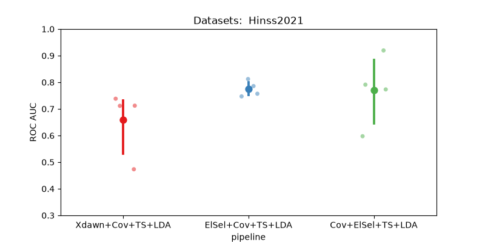

Note
Go to the end to download the full example code.
Hinss2021 classification example#
This example shows how to use the Hinss2021 dataset with the resting state paradigm.
In this example, we aim to determine the most effective channel selection strategy
for the moabb.datasets.Hinss2021 dataset.
The pipelines under consideration are:
Xdawn
Electrode selection based on time epochs data
Electrode selection based on covariance matrices
# License: BSD (3-clause)
import warnings
import numpy as np
import seaborn as sns
from matplotlib import pyplot as plt
from pyriemann.channelselection import ElectrodeSelection
from pyriemann.estimation import Covariances
from pyriemann.spatialfilters import Xdawn
from pyriemann.tangentspace import TangentSpace
from sklearn.base import BaseEstimator, TransformerMixin
from sklearn.discriminant_analysis import LinearDiscriminantAnalysis as LDA
from sklearn.pipeline import make_pipeline
from moabb import set_log_level
from moabb.datasets import Hinss2021
from moabb.evaluations import CrossSessionEvaluation
from moabb.paradigms import RestingStateToP300Adapter
# Suppressing future and runtime warnings for cleaner output
warnings.simplefilter(action="ignore", category=FutureWarning)
warnings.simplefilter(action="ignore", category=RuntimeWarning)
set_log_level("info")
Create util transformer#
Let’s create a scikit transformer mixin, that will select electrodes based on the covariance information
class EpochSelectChannel(TransformerMixin, BaseEstimator):
"""Select channels based on covariance information."""
def __init__(self, n_chan, cov_est):
self._chs_idx = None
self.n_chan = n_chan
self.cov_est = cov_est
def fit(self, X, _y=None):
# Get the covariances of the channels for each epoch.
covs = Covariances(estimator=self.cov_est).fit_transform(X)
# Get the average covariance between the channels
m = np.mean(covs, axis=0)
# Select the `n_chan` channels having the maximum covariances.
indices = np.unravel_index(
np.argpartition(m, -self.n_chan, axis=None)[-self.n_chan :], m.shape
)
# We will keep only these channels for the transform step.
self._chs_idx = np.unique(indices)
return self
def transform(self, X):
return X[:, self._chs_idx, :]
Initialization Process#
Define the experimental paradigm object (RestingState)
Load the datasets
Select a subset of subjects and specific events for analysis
# Here we define the mne events for the RestingState paradigm.
events = {"easy": 2, "diff": 3}
# The paradigm is adapted to the P300 paradigm.
paradigm = RestingStateToP300Adapter(events=events, tmin=0, tmax=0.5)
# We define a list with the dataset to use
datasets = [Hinss2021()]
# To reduce the computation time in the example, we will only use the
# first two subjects.
n__subjects = 2
title = "Datasets: "
for dataset in datasets:
title = title + " " + dataset.code
dataset.subject_list = dataset.subject_list[:n__subjects]
Create Pipelines#
Pipelines must be a dict of scikit-learning pipeline transformer.
pipelines = {}
pipelines["Xdawn+Cov+TS+LDA"] = make_pipeline(
Xdawn(nfilter=4), Covariances(estimator="lwf"), TangentSpace(), LDA()
)
pipelines["Cov+ElSel+TS+LDA"] = make_pipeline(
Covariances(estimator="lwf"), ElectrodeSelection(nelec=8), TangentSpace(), LDA()
)
# Pay attention here that the channel selection took place before computing the covariances:
# It is done on time epochs.
pipelines["ElSel+Cov+TS+LDA"] = make_pipeline(
EpochSelectChannel(n_chan=8, cov_est="lwf"),
Covariances(estimator="lwf"),
TangentSpace(),
LDA(),
)
Run evaluation#
Compare the pipeline using a cross session evaluation.
# Here should be cross-session
evaluation = CrossSessionEvaluation(paradigm=paradigm, datasets=datasets, overwrite=False)
results = evaluation.process(pipelines)
This is nemar-py 0.3.0.
Preparing to download nm000343 from https://data.nemar.org/
Retrieving 20 of 491 manifest files (16 concurrent downloads).
primary backend failed; falling back to next layer: 'sourcedata/P02/S1/electrode_positions/get_chanlocs.txt' is not annexed (no sha256/md5 checksum on the manifest entry); the S3 backend has nothing to fetch.
Overall: 0%| | 0.00/193M [00:00<?, ?B/s]
Overall: 0%| | 1.14k/193M [00:00<5:38:51, 9.94kB/s]
Overall: 0%| | 179k/193M [00:00<03:21, 1.00MB/s]
Overall: 2%|▏ | 3.73M/193M [00:00<00:11, 16.9MB/s]
Overall: 7%|▋ | 13.7M/193M [00:00<00:03, 50.8MB/s]
Overall: 14%|█▍ | 27.4M/193M [00:00<00:02, 83.7MB/s]
Overall: 23%|██▎ | 45.1M/193M [00:00<00:01, 118MB/s]
Overall: 33%|███▎ | 63.7M/193M [00:00<00:00, 143MB/s]
Overall: 43%|████▎ | 82.5M/193M [00:00<00:00, 160MB/s]
Overall: 53%|█████▎ | 102M/193M [00:00<00:00, 175MB/s]
Overall: 64%|██████▎ | 123M/193M [00:01<00:00, 187MB/s]
Overall: 74%|███████▍ | 143M/193M [00:01<00:00, 194MB/s]
Overall: 84%|████████▎ | 161M/193M [00:01<00:00, 180MB/s]
Overall: 93%|█████████▎| 179M/193M [00:01<00:00, 147MB/s]
Overall: 100%|█████████▉| 193M/193M [00:01<00:00, 123MB/s]
Finished downloading nm000343 v1.0.3.
0%| | 0.00/181M [00:00<?, ?B/s]
0%| | 11.3k/181M [00:00<35:52, 84.1kB/s]
0%| | 38.9k/181M [00:00<17:00, 177kB/s]
0%| | 98.3k/181M [00:00<08:49, 342kB/s]
0%| | 175k/181M [00:00<06:11, 487kB/s]
0%| | 247k/181M [00:00<05:27, 553kB/s]
0%| | 304k/181M [00:00<05:32, 544kB/s]
0%| | 407k/181M [00:00<04:26, 677kB/s]
0%| | 524k/181M [00:00<03:43, 809kB/s]
0%|▏ | 606k/181M [00:00<03:46, 797kB/s]
0%|▏ | 687k/181M [00:01<03:50, 783kB/s]
0%|▏ | 851k/181M [00:01<03:13, 932kB/s]
1%|▏ | 949k/181M [00:01<03:23, 885kB/s]
1%|▏ | 1.05M/181M [00:01<03:21, 891kB/s]
1%|▏ | 1.14M/181M [00:01<03:26, 873kB/s]
1%|▎ | 1.23M/181M [00:01<03:27, 866kB/s]
1%|▎ | 1.33M/181M [00:01<03:23, 883kB/s]
1%|▎ | 1.44M/181M [00:01<03:11, 938kB/s]
1%|▎ | 1.54M/181M [00:02<03:12, 931kB/s]
1%|▎ | 1.68M/181M [00:02<02:49, 1.06MB/s]
1%|▍ | 1.85M/181M [00:02<02:29, 1.20MB/s]
1%|▍ | 1.97M/181M [00:02<02:34, 1.16MB/s]
1%|▍ | 2.09M/181M [00:02<02:37, 1.14MB/s]
1%|▍ | 2.20M/181M [00:02<02:39, 1.12MB/s]
1%|▍ | 2.31M/181M [00:02<02:43, 1.10MB/s]
1%|▌ | 2.42M/181M [00:02<02:46, 1.07MB/s]
1%|▌ | 2.53M/181M [00:02<02:49, 1.05MB/s]
1%|▌ | 2.68M/181M [00:02<02:33, 1.16MB/s]
2%|▌ | 2.81M/181M [00:03<02:31, 1.18MB/s]
2%|▌ | 2.93M/181M [00:03<02:33, 1.16MB/s]
2%|▋ | 3.05M/181M [00:03<02:37, 1.13MB/s]
2%|▋ | 3.16M/181M [00:03<02:40, 1.11MB/s]
2%|▋ | 3.27M/181M [00:03<02:43, 1.09MB/s]
2%|▋ | 3.43M/181M [00:03<02:25, 1.22MB/s]
2%|▋ | 3.56M/181M [00:03<02:28, 1.19MB/s]
2%|▊ | 3.68M/181M [00:03<02:31, 1.17MB/s]
2%|▊ | 3.79M/181M [00:03<02:34, 1.15MB/s]
2%|▊ | 3.91M/181M [00:04<02:36, 1.13MB/s]
2%|▊ | 4.02M/181M [00:04<02:40, 1.11MB/s]
2%|▉ | 4.22M/181M [00:04<02:13, 1.32MB/s]
2%|▉ | 4.35M/181M [00:04<02:16, 1.30MB/s]
2%|▉ | 4.48M/181M [00:04<02:18, 1.27MB/s]
3%|▉ | 4.61M/181M [00:04<02:21, 1.25MB/s]
3%|▉ | 4.73M/181M [00:04<02:23, 1.22MB/s]
3%|█ | 4.86M/181M [00:04<03:10, 925kB/s]
3%|█ | 4.97M/181M [00:05<03:03, 960kB/s]
3%|█ | 5.08M/181M [00:05<03:02, 964kB/s]
3%|█ | 5.18M/181M [00:05<03:03, 957kB/s]
3%|█▏ | 5.28M/181M [00:05<03:05, 950kB/s]
3%|█▏ | 5.38M/181M [00:05<03:06, 941kB/s]
3%|█▏ | 5.47M/181M [00:05<03:09, 928kB/s]
3%|█▏ | 5.61M/181M [00:05<02:50, 1.03MB/s]
3%|█▏ | 5.74M/181M [00:05<02:41, 1.09MB/s]
3%|█▏ | 5.85M/181M [00:05<02:44, 1.07MB/s]
3%|█▎ | 5.96M/181M [00:05<02:47, 1.05MB/s]
3%|█▎ | 6.07M/181M [00:06<02:49, 1.03MB/s]
3%|█▎ | 6.17M/181M [00:06<02:54, 1.00MB/s]
3%|█▎ | 6.27M/181M [00:06<02:57, 985kB/s]
4%|█▎ | 6.37M/181M [00:06<03:01, 964kB/s]
4%|█▍ | 6.47M/181M [00:06<03:04, 947kB/s]
4%|█▍ | 6.56M/181M [00:06<03:07, 930kB/s]
4%|█▍ | 6.66M/181M [00:06<03:10, 914kB/s]
4%|█▍ | 6.79M/181M [00:06<02:54, 1.00MB/s]
4%|█▍ | 6.89M/181M [00:06<02:57, 981kB/s]
4%|█▌ | 6.99M/181M [00:07<03:00, 963kB/s]
4%|█▍ | 7.13M/181M [00:07<02:41, 1.08MB/s]
4%|█▌ | 7.24M/181M [00:07<02:44, 1.06MB/s]
4%|█▌ | 7.35M/181M [00:07<02:47, 1.04MB/s]
4%|█▌ | 7.52M/181M [00:07<02:22, 1.22MB/s]
4%|█▌ | 7.65M/181M [00:07<02:22, 1.21MB/s]
4%|█▋ | 7.78M/181M [00:07<02:25, 1.19MB/s]
4%|█▋ | 7.90M/181M [00:07<02:28, 1.17MB/s]
4%|█▋ | 8.01M/181M [00:07<02:30, 1.15MB/s]
4%|█▋ | 8.13M/181M [00:08<02:33, 1.13MB/s]
5%|█▋ | 8.24M/181M [00:08<02:35, 1.11MB/s]
5%|█▊ | 8.35M/181M [00:08<02:38, 1.09MB/s]
5%|█▊ | 8.46M/181M [00:08<02:41, 1.07MB/s]
5%|█▊ | 8.57M/181M [00:08<02:44, 1.05MB/s]
5%|█▊ | 8.68M/181M [00:08<02:47, 1.03MB/s]
5%|█▊ | 8.78M/181M [00:08<02:50, 1.01MB/s]
5%|█▉ | 8.88M/181M [00:08<02:53, 992kB/s]
5%|█▉ | 8.98M/181M [00:08<02:57, 970kB/s]
5%|█▉ | 9.17M/181M [00:08<02:20, 1.22MB/s]
5%|█▉ | 9.30M/181M [00:09<02:23, 1.20MB/s]
5%|█▉ | 9.42M/181M [00:09<02:26, 1.17MB/s]
5%|██ | 9.53M/181M [00:09<02:29, 1.15MB/s]
5%|██ | 9.65M/181M [00:09<02:32, 1.12MB/s]
5%|██ | 9.76M/181M [00:09<02:35, 1.10MB/s]
5%|██ | 9.87M/181M [00:09<02:38, 1.08MB/s]
6%|██ | 9.98M/181M [00:09<02:40, 1.06MB/s]
6%|██ | 10.1M/181M [00:09<02:44, 1.04MB/s]
6%|██▏ | 10.2M/181M [00:09<02:50, 1.00MB/s]
6%|██▏ | 10.3M/181M [00:10<02:52, 988kB/s]
6%|██▏ | 10.4M/181M [00:10<02:56, 969kB/s]
6%|██▎ | 10.5M/181M [00:10<02:55, 974kB/s]
6%|██▎ | 10.6M/181M [00:10<02:58, 954kB/s]
6%|██▎ | 10.7M/181M [00:10<02:45, 1.03MB/s]
6%|██▎ | 10.9M/181M [00:10<02:30, 1.13MB/s]
6%|██▎ | 11.0M/181M [00:10<02:32, 1.11MB/s]
6%|██▎ | 11.1M/181M [00:10<02:35, 1.09MB/s]
6%|██▎ | 11.2M/181M [00:10<02:38, 1.07MB/s]
6%|██▍ | 11.3M/181M [00:11<02:41, 1.05MB/s]
6%|██▍ | 11.4M/181M [00:11<02:44, 1.03MB/s]
6%|██▍ | 11.6M/181M [00:11<02:32, 1.11MB/s]
6%|██▍ | 11.7M/181M [00:11<02:28, 1.14MB/s]
7%|██▍ | 11.8M/181M [00:11<02:30, 1.12MB/s]
7%|██▌ | 11.9M/181M [00:11<02:34, 1.09MB/s]
7%|██▌ | 12.0M/181M [00:11<02:37, 1.07MB/s]
7%|██▌ | 12.1M/181M [00:11<02:40, 1.05MB/s]
7%|██▌ | 12.2M/181M [00:11<02:43, 1.03MB/s]
7%|██▌ | 12.3M/181M [00:12<02:46, 1.01MB/s]
7%|██▋ | 12.4M/181M [00:12<02:52, 978kB/s]
7%|██▋ | 12.5M/181M [00:12<02:56, 957kB/s]
7%|██▋ | 12.6M/181M [00:12<02:58, 941kB/s]
7%|██▋ | 12.7M/181M [00:12<03:02, 924kB/s]
7%|██▊ | 12.8M/181M [00:12<03:04, 910kB/s]
7%|██▊ | 12.9M/181M [00:12<03:00, 930kB/s]
7%|██▊ | 13.1M/181M [00:12<02:25, 1.15MB/s]
7%|██▊ | 13.3M/181M [00:12<02:03, 1.35MB/s]
7%|██▊ | 13.4M/181M [00:12<02:07, 1.32MB/s]
8%|██▊ | 13.6M/181M [00:13<02:12, 1.26MB/s]
8%|██▉ | 13.7M/181M [00:13<02:15, 1.24MB/s]
8%|██▉ | 13.8M/181M [00:13<02:18, 1.20MB/s]
8%|██▉ | 14.0M/181M [00:13<02:24, 1.16MB/s]
8%|██▉ | 14.1M/181M [00:13<02:26, 1.14MB/s]
8%|██▉ | 14.2M/181M [00:13<02:29, 1.12MB/s]
8%|███ | 14.3M/181M [00:13<02:31, 1.10MB/s]
8%|███ | 14.5M/181M [00:13<02:16, 1.22MB/s]
8%|███ | 14.6M/181M [00:13<02:11, 1.27MB/s]
8%|███ | 14.7M/181M [00:14<02:13, 1.24MB/s]
8%|███ | 14.9M/181M [00:14<02:16, 1.22MB/s]
8%|███▏ | 15.0M/181M [00:14<02:18, 1.20MB/s]
8%|███▏ | 15.1M/181M [00:14<02:21, 1.18MB/s]
8%|███▏ | 15.2M/181M [00:14<02:20, 1.18MB/s]
8%|███▏ | 15.3M/181M [00:14<02:23, 1.15MB/s]
9%|███▏ | 15.5M/181M [00:14<02:26, 1.13MB/s]
9%|███▎ | 15.6M/181M [00:14<02:29, 1.11MB/s]
9%|███▎ | 15.7M/181M [00:14<02:26, 1.13MB/s]
9%|███▎ | 15.8M/181M [00:15<02:23, 1.15MB/s]
9%|███▎ | 15.9M/181M [00:15<02:25, 1.13MB/s]
9%|███▎ | 16.1M/181M [00:15<02:28, 1.11MB/s]
9%|███▍ | 16.2M/181M [00:15<02:31, 1.09MB/s]
9%|███▍ | 16.3M/181M [00:15<02:34, 1.07MB/s]
9%|███▍ | 16.4M/181M [00:15<02:37, 1.05MB/s]
9%|███▍ | 16.5M/181M [00:15<02:40, 1.03MB/s]
9%|███▍ | 16.6M/181M [00:15<02:35, 1.06MB/s]
9%|███▌ | 16.7M/181M [00:15<02:43, 1.00MB/s]
9%|███▌ | 16.8M/181M [00:16<02:49, 967kB/s]
9%|███▌ | 16.9M/181M [00:16<02:42, 1.01MB/s]
9%|███▌ | 17.1M/181M [00:16<02:11, 1.25MB/s]
10%|███▌ | 17.3M/181M [00:16<02:13, 1.23MB/s]
10%|███▋ | 17.4M/181M [00:16<02:15, 1.21MB/s]
10%|███▊ | 17.5M/181M [00:16<02:59, 909kB/s]
10%|███▊ | 17.6M/181M [00:16<02:57, 919kB/s]
10%|███▋ | 17.8M/181M [00:16<02:16, 1.20MB/s]
10%|███▊ | 18.0M/181M [00:16<02:15, 1.20MB/s]
10%|███▊ | 18.1M/181M [00:17<02:18, 1.18MB/s]
10%|███▊ | 18.2M/181M [00:17<02:19, 1.16MB/s]
10%|███▊ | 18.3M/181M [00:17<02:21, 1.15MB/s]
10%|███▉ | 18.4M/181M [00:17<03:04, 883kB/s]
10%|███▉ | 18.5M/181M [00:17<03:01, 893kB/s]
10%|████ | 18.6M/181M [00:17<03:00, 901kB/s]
10%|████ | 18.7M/181M [00:17<02:59, 905kB/s]
10%|████ | 18.9M/181M [00:17<02:50, 950kB/s]
10%|████ | 19.0M/181M [00:18<02:55, 925kB/s]
11%|████ | 19.1M/181M [00:18<02:55, 923kB/s]
11%|████ | 19.2M/181M [00:18<02:40, 1.01MB/s]
11%|████ | 19.3M/181M [00:18<02:37, 1.03MB/s]
11%|████ | 19.4M/181M [00:18<02:39, 1.01MB/s]
11%|████ | 19.5M/181M [00:18<02:33, 1.05MB/s]
11%|████▏ | 19.7M/181M [00:18<02:22, 1.13MB/s]
11%|████▏ | 19.8M/181M [00:18<02:28, 1.09MB/s]
11%|████▏ | 19.9M/181M [00:18<02:29, 1.08MB/s]
11%|████▏ | 20.0M/181M [00:19<02:32, 1.06MB/s]
11%|████▏ | 20.1M/181M [00:19<02:34, 1.04MB/s]
11%|████▏ | 20.2M/181M [00:19<02:37, 1.02MB/s]
11%|████▎ | 20.3M/181M [00:19<02:40, 1.00MB/s]
11%|████▍ | 20.4M/181M [00:19<02:43, 984kB/s]
11%|████▍ | 20.5M/181M [00:19<02:46, 967kB/s]
11%|████▍ | 20.6M/181M [00:19<02:48, 953kB/s]
11%|████▎ | 20.8M/181M [00:19<02:33, 1.04MB/s]
12%|████▍ | 20.9M/181M [00:19<02:36, 1.02MB/s]
12%|████▍ | 21.0M/181M [00:20<02:36, 1.02MB/s]
12%|████▍ | 21.1M/181M [00:20<02:34, 1.04MB/s]
12%|████▌ | 21.2M/181M [00:20<02:41, 990kB/s]
12%|████▌ | 21.3M/181M [00:20<02:46, 958kB/s]
12%|████▌ | 21.4M/181M [00:20<02:50, 938kB/s]
12%|████▋ | 21.5M/181M [00:20<02:53, 921kB/s]
12%|████▋ | 21.6M/181M [00:20<02:54, 914kB/s]
12%|████▋ | 21.7M/181M [00:20<02:42, 978kB/s]
12%|████▋ | 21.8M/181M [00:20<02:46, 958kB/s]
12%|████▋ | 21.9M/181M [00:21<02:52, 924kB/s]
12%|████▋ | 22.0M/181M [00:21<02:54, 911kB/s]
12%|████▊ | 22.1M/181M [00:21<02:57, 893kB/s]
12%|████▊ | 22.2M/181M [00:21<03:01, 876kB/s]
12%|████▊ | 22.3M/181M [00:21<02:46, 953kB/s]
12%|████▊ | 22.4M/181M [00:21<02:48, 943kB/s]
12%|████▋ | 22.6M/181M [00:21<02:35, 1.02MB/s]
13%|████▉ | 22.7M/181M [00:21<02:42, 972kB/s]
13%|████▉ | 22.8M/181M [00:21<02:51, 921kB/s]
13%|████▉ | 22.9M/181M [00:22<02:53, 909kB/s]
13%|████▉ | 23.0M/181M [00:22<02:56, 894kB/s]
13%|████▉ | 23.0M/181M [00:22<02:59, 878kB/s]
13%|████▉ | 23.2M/181M [00:22<02:49, 932kB/s]
13%|█████ | 23.3M/181M [00:22<02:42, 973kB/s]
13%|████▉ | 23.4M/181M [00:22<02:37, 1.00MB/s]
13%|████▉ | 23.5M/181M [00:22<02:27, 1.07MB/s]
13%|████▉ | 23.7M/181M [00:22<02:11, 1.20MB/s]
13%|████▉ | 23.8M/181M [00:22<02:13, 1.17MB/s]
13%|█████ | 23.9M/181M [00:23<02:18, 1.13MB/s]
13%|█████ | 24.0M/181M [00:23<02:21, 1.11MB/s]
13%|█████ | 24.1M/181M [00:23<02:24, 1.08MB/s]
13%|█████ | 24.3M/181M [00:23<02:27, 1.06MB/s]
13%|█████ | 24.4M/181M [00:23<02:30, 1.04MB/s]
14%|█████▏ | 24.5M/181M [00:23<02:25, 1.07MB/s]
14%|█████▏ | 24.6M/181M [00:23<02:28, 1.05MB/s]
14%|█████▏ | 24.7M/181M [00:23<02:31, 1.03MB/s]
14%|█████▏ | 24.8M/181M [00:23<02:34, 1.01MB/s]
14%|█████▏ | 24.9M/181M [00:23<02:27, 1.06MB/s]
14%|█████▎ | 25.0M/181M [00:24<02:30, 1.04MB/s]
14%|█████▎ | 25.1M/181M [00:24<02:32, 1.02MB/s]
14%|█████▎ | 25.2M/181M [00:24<02:30, 1.04MB/s]
14%|█████▎ | 25.4M/181M [00:24<02:28, 1.05MB/s]
14%|█████▍ | 25.5M/181M [00:24<02:40, 967kB/s]
14%|█████▌ | 25.6M/181M [00:24<02:43, 949kB/s]
14%|█████▌ | 25.7M/181M [00:24<02:46, 932kB/s]
14%|█████▌ | 25.8M/181M [00:24<02:42, 958kB/s]
14%|█████▌ | 25.9M/181M [00:24<02:44, 941kB/s]
14%|█████▌ | 26.0M/181M [00:25<02:47, 927kB/s]
14%|█████▌ | 26.1M/181M [00:25<02:45, 936kB/s]
14%|█████▋ | 26.2M/181M [00:25<02:48, 919kB/s]
15%|█████▋ | 26.3M/181M [00:25<02:46, 931kB/s]
15%|█████▋ | 26.4M/181M [00:25<02:50, 907kB/s]
15%|█████▋ | 26.4M/181M [00:25<02:53, 890kB/s]
15%|█████▋ | 26.5M/181M [00:25<02:57, 873kB/s]
15%|█████▋ | 26.6M/181M [00:25<03:00, 857kB/s]
15%|█████▊ | 26.7M/181M [00:25<03:03, 842kB/s]
15%|█████▊ | 26.8M/181M [00:26<03:01, 848kB/s]
15%|█████▋ | 27.0M/181M [00:26<02:20, 1.10MB/s]
15%|█████▋ | 27.1M/181M [00:26<02:22, 1.08MB/s]
15%|█████▋ | 27.2M/181M [00:26<02:16, 1.13MB/s]
15%|█████▋ | 27.3M/181M [00:26<02:18, 1.11MB/s]
15%|█████▊ | 27.5M/181M [00:26<02:21, 1.09MB/s]
15%|█████▊ | 27.6M/181M [00:26<02:27, 1.04MB/s]
15%|█████▊ | 27.7M/181M [00:26<02:31, 1.01MB/s]
15%|█████▉ | 27.8M/181M [00:26<02:33, 996kB/s]
15%|██████ | 27.9M/181M [00:27<02:37, 972kB/s]
15%|██████ | 28.0M/181M [00:27<02:42, 945kB/s]
16%|██████ | 28.1M/181M [00:27<02:46, 919kB/s]
16%|██████ | 28.2M/181M [00:27<02:50, 899kB/s]
16%|██████ | 28.3M/181M [00:27<02:50, 894kB/s]
16%|██████ | 28.3M/181M [00:27<02:53, 879kB/s]
16%|██████▏ | 28.5M/181M [00:27<02:46, 915kB/s]
16%|██████▏ | 28.6M/181M [00:27<02:46, 916kB/s]
16%|██████ | 28.7M/181M [00:27<02:25, 1.05MB/s]
16%|██████ | 28.8M/181M [00:28<02:12, 1.15MB/s]
16%|██████ | 29.0M/181M [00:28<02:09, 1.17MB/s]
16%|██████ | 29.1M/181M [00:28<02:12, 1.15MB/s]
16%|██████▏ | 29.2M/181M [00:28<02:15, 1.12MB/s]
16%|██████▏ | 29.3M/181M [00:28<02:13, 1.14MB/s]
16%|██████▏ | 29.5M/181M [00:28<02:10, 1.16MB/s]
16%|██████▏ | 29.6M/181M [00:28<02:03, 1.23MB/s]
16%|██████▏ | 29.7M/181M [00:28<02:05, 1.21MB/s]
16%|██████▎ | 29.9M/181M [00:28<02:08, 1.18MB/s]
17%|██████▎ | 30.1M/181M [00:28<01:46, 1.42MB/s]
17%|██████▎ | 30.2M/181M [00:29<01:48, 1.39MB/s]
17%|██████▎ | 30.4M/181M [00:29<01:50, 1.36MB/s]
17%|██████▍ | 30.5M/181M [00:29<02:26, 1.03MB/s]
17%|██████▍ | 30.6M/181M [00:29<02:24, 1.04MB/s]
17%|██████▍ | 30.7M/181M [00:29<02:24, 1.04MB/s]
17%|██████▍ | 30.9M/181M [00:29<02:05, 1.19MB/s]
17%|██████▌ | 31.0M/181M [00:29<02:04, 1.20MB/s]
17%|██████▌ | 31.2M/181M [00:29<01:56, 1.28MB/s]
17%|██████▌ | 31.3M/181M [00:30<01:58, 1.27MB/s]
17%|██████▌ | 31.4M/181M [00:30<01:59, 1.25MB/s]
17%|██████▋ | 31.6M/181M [00:30<02:02, 1.22MB/s]
18%|██████▋ | 31.7M/181M [00:30<02:04, 1.20MB/s]
18%|██████▋ | 31.8M/181M [00:30<02:06, 1.18MB/s]
18%|██████▋ | 31.9M/181M [00:30<02:08, 1.16MB/s]
18%|██████▋ | 32.1M/181M [00:30<02:10, 1.14MB/s]
18%|██████▊ | 32.2M/181M [00:30<02:12, 1.12MB/s]
18%|██████▊ | 32.3M/181M [00:30<02:15, 1.10MB/s]
18%|██████▊ | 32.4M/181M [00:31<02:10, 1.14MB/s]
18%|██████▊ | 32.5M/181M [00:31<02:12, 1.12MB/s]
18%|██████▊ | 32.7M/181M [00:31<02:08, 1.15MB/s]
18%|██████▉ | 32.8M/181M [00:31<02:11, 1.13MB/s]
18%|██████▉ | 32.9M/181M [00:31<02:13, 1.11MB/s]
18%|██████▉ | 33.1M/181M [00:31<01:51, 1.33MB/s]
18%|██████▉ | 33.2M/181M [00:31<01:53, 1.30MB/s]
18%|██████▉ | 33.3M/181M [00:31<01:55, 1.27MB/s]
18%|███████ | 33.5M/181M [00:31<01:57, 1.25MB/s]
19%|███████ | 33.6M/181M [00:31<02:00, 1.23MB/s]
19%|███████ | 33.7M/181M [00:32<02:02, 1.21MB/s]
19%|███████ | 33.8M/181M [00:32<02:04, 1.18MB/s]
19%|███████▏ | 34.0M/181M [00:32<02:06, 1.16MB/s]
19%|███████▏ | 34.1M/181M [00:32<02:08, 1.14MB/s]
19%|███████▏ | 34.2M/181M [00:32<02:10, 1.12MB/s]
19%|███████▎ | 34.6M/181M [00:32<01:15, 1.93MB/s]
19%|███████▎ | 35.1M/181M [00:32<00:55, 2.62MB/s]
20%|███████▌ | 35.9M/181M [00:32<00:33, 4.33MB/s]
20%|███████▋ | 36.8M/181M [00:32<00:26, 5.40MB/s]
21%|████████ | 38.6M/181M [00:33<00:16, 8.77MB/s]
22%|████████▎ | 39.4M/181M [00:33<00:21, 6.58MB/s]
22%|████████▍ | 40.2M/181M [00:33<00:26, 5.35MB/s]
23%|████████▌ | 40.8M/181M [00:33<00:31, 4.46MB/s]
23%|████████▋ | 41.3M/181M [00:33<00:30, 4.53MB/s]
23%|████████▊ | 41.8M/181M [00:33<00:31, 4.45MB/s]
23%|████████▉ | 42.3M/181M [00:34<00:31, 4.45MB/s]
24%|████████▉ | 42.8M/181M [00:34<00:37, 3.66MB/s]
24%|█████████ | 43.2M/181M [00:34<00:38, 3.56MB/s]
24%|█████████▏ | 43.6M/181M [00:34<00:38, 3.56MB/s]
24%|█████████▏ | 43.9M/181M [00:34<00:38, 3.54MB/s]
24%|█████████▎ | 44.3M/181M [00:34<00:38, 3.56MB/s]
25%|█████████▍ | 44.7M/181M [00:34<00:38, 3.54MB/s]
25%|█████████▍ | 45.1M/181M [00:34<00:38, 3.52MB/s]
25%|█████████▌ | 45.5M/181M [00:35<00:38, 3.50MB/s]
25%|█████████▌ | 45.8M/181M [00:35<00:38, 3.50MB/s]
26%|█████████▋ | 46.3M/181M [00:35<00:37, 3.63MB/s]
26%|█████████▊ | 46.7M/181M [00:35<00:36, 3.64MB/s]
26%|█████████▉ | 47.1M/181M [00:35<00:35, 3.74MB/s]
26%|█████████▉ | 47.5M/181M [00:35<00:35, 3.72MB/s]
26%|██████████ | 47.9M/181M [00:35<00:35, 3.71MB/s]
27%|██████████▏ | 48.3M/181M [00:35<00:35, 3.74MB/s]
27%|██████████▏ | 48.7M/181M [00:35<00:35, 3.70MB/s]
27%|██████████▎ | 49.1M/181M [00:35<00:35, 3.70MB/s]
27%|██████████▍ | 49.5M/181M [00:36<00:35, 3.68MB/s]
28%|██████████▍ | 49.8M/181M [00:36<00:35, 3.65MB/s]
28%|██████████▌ | 50.2M/181M [00:36<00:36, 3.57MB/s]
28%|██████████▌ | 50.6M/181M [00:36<00:37, 3.51MB/s]
28%|██████████▋ | 50.9M/181M [00:36<00:36, 3.53MB/s]
28%|██████████▊ | 51.4M/181M [00:36<00:35, 3.66MB/s]
29%|██████████▊ | 51.8M/181M [00:36<00:35, 3.66MB/s]
29%|██████████▉ | 52.2M/181M [00:36<00:35, 3.67MB/s]
29%|███████████ | 52.6M/181M [00:36<00:35, 3.67MB/s]
29%|███████████ | 52.9M/181M [00:37<00:35, 3.61MB/s]
29%|███████████▏ | 53.3M/181M [00:37<00:35, 3.63MB/s]
30%|███████████▎ | 53.7M/181M [00:37<00:34, 3.64MB/s]
30%|███████████▎ | 54.1M/181M [00:37<00:33, 3.74MB/s]
30%|███████████▍ | 54.6M/181M [00:37<00:33, 3.81MB/s]
30%|███████████▌ | 55.0M/181M [00:37<00:33, 3.77MB/s]
31%|███████████▌ | 55.3M/181M [00:37<00:34, 3.69MB/s]
31%|███████████▋ | 55.7M/181M [00:37<00:33, 3.72MB/s]
31%|███████████▊ | 56.1M/181M [00:37<00:33, 3.70MB/s]
31%|███████████▊ | 56.5M/181M [00:38<00:33, 3.74MB/s]
31%|███████████▉ | 56.9M/181M [00:38<00:33, 3.70MB/s]
32%|████████████ | 57.3M/181M [00:38<00:33, 3.69MB/s]
32%|████████████ | 57.7M/181M [00:38<00:38, 3.19MB/s]
32%|████████████▏ | 58.0M/181M [00:38<00:38, 3.17MB/s]
32%|████████████▏ | 58.3M/181M [00:38<00:39, 3.13MB/s]
32%|████████████▎ | 58.7M/181M [00:38<00:40, 3.05MB/s]
33%|████████████▍ | 59.0M/181M [00:38<00:40, 3.01MB/s]
33%|████████████▍ | 59.3M/181M [00:38<00:41, 2.97MB/s]
33%|████████████▌ | 59.6M/181M [00:39<00:41, 2.91MB/s]
33%|████████████▌ | 59.9M/181M [00:39<00:40, 3.00MB/s]
33%|████████████▋ | 60.3M/181M [00:39<00:38, 3.15MB/s]
33%|████████████▋ | 60.6M/181M [00:39<00:38, 3.09MB/s]
34%|████████████▊ | 60.9M/181M [00:39<00:39, 3.04MB/s]
34%|████████████▊ | 61.3M/181M [00:39<00:37, 3.22MB/s]
34%|████████████▉ | 61.7M/181M [00:39<00:36, 3.31MB/s]
34%|█████████████ | 62.1M/181M [00:39<00:36, 3.29MB/s]
34%|█████████████ | 62.4M/181M [00:39<00:35, 3.31MB/s]
35%|█████████████▏ | 62.8M/181M [00:39<00:34, 3.44MB/s]
35%|█████████████▎ | 63.2M/181M [00:40<00:34, 3.41MB/s]
35%|█████████████▎ | 63.5M/181M [00:40<00:35, 3.34MB/s]
35%|█████████████▍ | 63.9M/181M [00:40<00:34, 3.40MB/s]
36%|█████████████▌ | 64.3M/181M [00:40<00:33, 3.53MB/s]
36%|█████████████▌ | 64.7M/181M [00:40<00:32, 3.57MB/s]
36%|█████████████▋ | 65.1M/181M [00:40<00:32, 3.60MB/s]
36%|█████████████▋ | 65.5M/181M [00:40<00:31, 3.62MB/s]
36%|█████████████▊ | 65.9M/181M [00:40<00:32, 3.59MB/s]
37%|█████████████▉ | 66.2M/181M [00:40<00:32, 3.51MB/s]
37%|█████████████▉ | 66.6M/181M [00:41<00:33, 3.44MB/s]
37%|██████████████ | 66.9M/181M [00:41<00:33, 3.41MB/s]
37%|██████████████▏ | 67.3M/181M [00:41<00:33, 3.44MB/s]
37%|██████████████▏ | 67.7M/181M [00:41<00:32, 3.44MB/s]
38%|██████████████▎ | 68.0M/181M [00:41<00:33, 3.39MB/s]
38%|██████████████▎ | 68.4M/181M [00:41<00:32, 3.52MB/s]
38%|██████████████▍ | 68.8M/181M [00:41<00:32, 3.44MB/s]
38%|██████████████▌ | 69.1M/181M [00:41<00:33, 3.38MB/s]
38%|██████████████▌ | 69.5M/181M [00:41<00:33, 3.33MB/s]
39%|██████████████▋ | 69.8M/181M [00:42<00:33, 3.30MB/s]
39%|██████████████▋ | 70.3M/181M [00:42<00:31, 3.50MB/s]
39%|██████████████▊ | 70.6M/181M [00:42<00:31, 3.50MB/s]
39%|██████████████▉ | 71.0M/181M [00:42<00:34, 3.22MB/s]
39%|██████████████▉ | 71.3M/181M [00:42<00:35, 3.09MB/s]
40%|███████████████ | 71.6M/181M [00:42<00:35, 3.10MB/s]
40%|███████████████ | 72.0M/181M [00:42<00:33, 3.26MB/s]
40%|███████████████▏ | 72.4M/181M [00:42<00:33, 3.28MB/s]
40%|███████████████▎ | 72.8M/181M [00:42<00:32, 3.34MB/s]
40%|███████████████▎ | 73.2M/181M [00:43<00:32, 3.35MB/s]
41%|███████████████▍ | 73.5M/181M [00:43<00:32, 3.27MB/s]
41%|███████████████▍ | 73.8M/181M [00:43<00:33, 3.20MB/s]
41%|███████████████▌ | 74.2M/181M [00:43<00:32, 3.31MB/s]
41%|███████████████▋ | 74.6M/181M [00:43<00:32, 3.32MB/s]
41%|███████████████▋ | 74.9M/181M [00:43<00:32, 3.25MB/s]
42%|███████████████▊ | 75.3M/181M [00:43<00:32, 3.29MB/s]
42%|███████████████▉ | 75.7M/181M [00:43<00:30, 3.45MB/s]
42%|███████████████▉ | 76.0M/181M [00:43<00:30, 3.47MB/s]
42%|████████████████ | 76.4M/181M [00:44<00:29, 3.51MB/s]
42%|████████████████ | 76.8M/181M [00:44<00:30, 3.45MB/s]
43%|████████████████▏ | 77.2M/181M [00:44<00:29, 3.58MB/s]
44%|████████████████▊ | 80.1M/181M [00:44<00:09, 10.4MB/s]
45%|█████████████████ | 81.3M/181M [00:44<00:09, 10.6MB/s]
47%|█████████████████▋ | 84.5M/181M [00:44<00:06, 16.0MB/s]
48%|██████████████████ | 86.1M/181M [00:44<00:11, 8.31MB/s]
48%|██████████████████▎ | 87.3M/181M [00:45<00:14, 6.48MB/s]
49%|██████████████████▌ | 88.2M/181M [00:45<00:16, 5.55MB/s]
49%|██████████████████▋ | 89.0M/181M [00:45<00:18, 5.03MB/s]
50%|██████████████████▊ | 89.7M/181M [00:45<00:19, 4.80MB/s]
50%|██████████████████▉ | 90.2M/181M [00:46<00:20, 4.51MB/s]
50%|███████████████████ | 90.7M/181M [00:46<00:21, 4.16MB/s]
50%|███████████████████▏ | 91.2M/181M [00:46<00:21, 4.17MB/s]
51%|███████████████████▏ | 91.6M/181M [00:46<00:22, 4.01MB/s]
51%|███████████████████▎ | 92.1M/181M [00:46<00:24, 3.58MB/s]
51%|███████████████████▍ | 92.4M/181M [00:46<00:24, 3.58MB/s]
51%|███████████████████▍ | 92.8M/181M [00:46<00:24, 3.56MB/s]
51%|███████████████████▌ | 93.2M/181M [00:46<00:24, 3.55MB/s]
52%|███████████████████▋ | 93.6M/181M [00:47<00:23, 3.67MB/s]
52%|███████████████████▋ | 94.0M/181M [00:47<00:23, 3.69MB/s]
52%|███████████████████▊ | 94.4M/181M [00:47<00:23, 3.64MB/s]
52%|███████████████████▉ | 94.8M/181M [00:47<00:23, 3.65MB/s]
53%|███████████████████▉ | 95.2M/181M [00:47<00:23, 3.65MB/s]
53%|████████████████████ | 95.6M/181M [00:47<00:23, 3.64MB/s]
53%|████████████████████▏ | 96.0M/181M [00:47<00:23, 3.63MB/s]
53%|████████████████████▏ | 96.3M/181M [00:47<00:23, 3.56MB/s]
53%|████████████████████▎ | 96.7M/181M [00:47<00:23, 3.52MB/s]
54%|████████████████████▎ | 97.1M/181M [00:48<00:24, 3.48MB/s]
54%|████████████████████▍ | 97.4M/181M [00:48<00:24, 3.40MB/s]
54%|████████████████████▌ | 97.8M/181M [00:48<00:24, 3.34MB/s]
54%|████████████████████▌ | 98.1M/181M [00:48<00:24, 3.44MB/s]
54%|████████████████████▋ | 98.5M/181M [00:48<00:24, 3.43MB/s]
55%|████████████████████▊ | 98.9M/181M [00:48<00:24, 3.39MB/s]
55%|████████████████████▊ | 99.3M/181M [00:48<00:23, 3.48MB/s]
55%|████████████████████▉ | 99.6M/181M [00:48<00:23, 3.51MB/s]
55%|█████████████████████▌ | 100M/181M [00:48<00:23, 3.51MB/s]
55%|█████████████████████▋ | 100M/181M [00:49<00:22, 3.51MB/s]
56%|█████████████████████▋ | 101M/181M [00:49<00:22, 3.54MB/s]
56%|█████████████████████▊ | 101M/181M [00:49<00:23, 3.47MB/s]
56%|█████████████████████▊ | 102M/181M [00:49<00:22, 3.50MB/s]
56%|█████████████████████▉ | 102M/181M [00:49<00:21, 3.63MB/s]
57%|██████████████████████ | 102M/181M [00:49<00:21, 3.64MB/s]
57%|██████████████████████▏ | 103M/181M [00:49<00:21, 3.65MB/s]
57%|██████████████████████▏ | 103M/181M [00:49<00:21, 3.65MB/s]
57%|██████████████████████▎ | 104M/181M [00:49<00:20, 3.70MB/s]
57%|██████████████████████▍ | 104M/181M [00:49<00:20, 3.73MB/s]
58%|██████████████████████▍ | 104M/181M [00:50<00:21, 3.51MB/s]
58%|██████████████████████▌ | 105M/181M [00:50<00:22, 3.45MB/s]
58%|██████████████████████▋ | 105M/181M [00:50<00:22, 3.33MB/s]
58%|██████████████████████▋ | 105M/181M [00:50<00:23, 3.22MB/s]
58%|██████████████████████▊ | 106M/181M [00:50<00:28, 2.67MB/s]
59%|██████████████████████▊ | 106M/181M [00:50<00:25, 2.88MB/s]
59%|██████████████████████▉ | 107M/181M [00:50<00:23, 3.13MB/s]
59%|███████████████████████ | 107M/181M [00:50<00:22, 3.23MB/s]
59%|███████████████████████ | 107M/181M [00:51<00:21, 3.35MB/s]
59%|███████████████████████▏ | 108M/181M [00:51<00:21, 3.40MB/s]
60%|███████████████████████▎ | 108M/181M [00:51<00:21, 3.34MB/s]
60%|███████████████████████▎ | 108M/181M [00:51<00:22, 3.29MB/s]
60%|███████████████████████▍ | 109M/181M [00:51<00:21, 3.33MB/s]
60%|███████████████████████▌ | 109M/181M [00:51<00:21, 3.38MB/s]
60%|███████████████████████▌ | 109M/181M [00:51<00:20, 3.46MB/s]
61%|███████████████████████▋ | 110M/181M [00:51<00:20, 3.48MB/s]
61%|███████████████████████▊ | 110M/181M [00:51<00:20, 3.53MB/s]
61%|███████████████████████▊ | 111M/181M [00:52<00:19, 3.66MB/s]
61%|███████████████████████▉ | 111M/181M [00:52<00:19, 3.66MB/s]
62%|████████████████████████ | 111M/181M [00:52<00:18, 3.66MB/s]
62%|████████████████████████ | 112M/181M [00:52<00:18, 3.76MB/s]
62%|████████████████████████▏ | 112M/181M [00:52<00:17, 3.82MB/s]
62%|████████████████████████▎ | 113M/181M [00:52<00:18, 3.77MB/s]
62%|████████████████████████▎ | 113M/181M [00:52<00:18, 3.73MB/s]
63%|████████████████████████▍ | 114M/181M [00:52<00:18, 3.67MB/s]
63%|████████████████████████▌ | 114M/181M [00:52<00:18, 3.60MB/s]
63%|████████████████████████▌ | 114M/181M [00:53<00:18, 3.53MB/s]
63%|████████████████████████▋ | 115M/181M [00:53<00:19, 3.47MB/s]
63%|████████████████████████▊ | 115M/181M [00:53<00:19, 3.43MB/s]
64%|████████████████████████▊ | 115M/181M [00:53<00:18, 3.50MB/s]
64%|████████████████████████▉ | 116M/181M [00:53<00:18, 3.52MB/s]
64%|█████████████████████████ | 116M/181M [00:53<00:18, 3.54MB/s]
64%|█████████████████████████ | 117M/181M [00:53<00:17, 3.59MB/s]
65%|█████████████████████████▏ | 117M/181M [00:53<00:17, 3.59MB/s]
65%|█████████████████████████▎ | 117M/181M [00:53<00:19, 3.34MB/s]
65%|█████████████████████████▎ | 118M/181M [00:54<00:19, 3.23MB/s]
65%|█████████████████████████▍ | 118M/181M [00:54<00:18, 3.39MB/s]
65%|█████████████████████████▌ | 118M/181M [00:54<00:17, 3.48MB/s]
66%|█████████████████████████▌ | 119M/181M [00:54<00:17, 3.53MB/s]
66%|█████████████████████████▋ | 119M/181M [00:54<00:16, 3.66MB/s]
66%|█████████████████████████▊ | 120M/181M [00:54<00:16, 3.67MB/s]
66%|█████████████████████████▊ | 120M/181M [00:54<00:16, 3.71MB/s]
67%|█████████████████████████▉ | 120M/181M [00:54<00:16, 3.64MB/s]
67%|██████████████████████████ | 121M/181M [00:54<00:16, 3.60MB/s]
67%|██████████████████████████ | 121M/181M [00:54<00:16, 3.66MB/s]
67%|██████████████████████████▏ | 122M/181M [00:55<00:16, 3.70MB/s]
67%|██████████████████████████▎ | 122M/181M [00:55<00:16, 3.66MB/s]
68%|██████████████████████████▎ | 122M/181M [00:55<00:16, 3.58MB/s]
68%|██████████████████████████▍ | 123M/181M [00:55<00:16, 3.59MB/s]
68%|██████████████████████████▌ | 123M/181M [00:55<00:15, 3.66MB/s]
68%|██████████████████████████▌ | 124M/181M [00:55<00:15, 3.64MB/s]
68%|██████████████████████████▋ | 124M/181M [00:55<00:16, 3.56MB/s]
69%|██████████████████████████▊ | 124M/181M [00:55<00:15, 3.63MB/s]
69%|██████████████████████████▊ | 125M/181M [00:55<00:15, 3.60MB/s]
69%|██████████████████████████▉ | 125M/181M [00:56<00:15, 3.67MB/s]
69%|███████████████████████████ | 126M/181M [00:56<00:15, 3.51MB/s]
70%|███████████████████████████ | 126M/181M [00:56<00:16, 3.44MB/s]
70%|███████████████████████████▏ | 126M/181M [00:56<00:16, 3.37MB/s]
70%|███████████████████████████▎ | 127M/181M [00:56<00:17, 3.05MB/s]
70%|███████████████████████████▎ | 127M/181M [00:56<00:17, 3.10MB/s]
70%|███████████████████████████▍ | 127M/181M [00:56<00:16, 3.26MB/s]
71%|███████████████████████████▌ | 128M/181M [00:56<00:15, 3.37MB/s]
71%|███████████████████████████▌ | 128M/181M [00:56<00:15, 3.32MB/s]
71%|███████████████████████████▋ | 128M/181M [00:57<00:16, 3.27MB/s]
71%|███████████████████████████▋ | 129M/181M [00:57<00:16, 3.23MB/s]
71%|███████████████████████████▊ | 129M/181M [00:57<00:16, 3.17MB/s]
72%|███████████████████████████▉ | 129M/181M [00:57<00:15, 3.40MB/s]
72%|███████████████████████████▉ | 130M/181M [00:57<00:14, 3.43MB/s]
72%|████████████████████████████ | 130M/181M [00:57<00:15, 3.35MB/s]
72%|████████████████████████████ | 131M/181M [00:57<00:14, 3.38MB/s]
72%|████████████████████████████▏ | 131M/181M [00:57<00:14, 3.54MB/s]
73%|████████████████████████████▎ | 131M/181M [00:57<00:14, 3.55MB/s]
73%|████████████████████████████▍ | 132M/181M [00:58<00:13, 3.58MB/s]
73%|████████████████████████████▍ | 132M/181M [00:58<00:13, 3.51MB/s]
73%|████████████████████████████▌ | 132M/181M [00:58<00:14, 3.44MB/s]
73%|████████████████████████████▌ | 133M/181M [00:58<00:14, 3.36MB/s]
74%|████████████████████████████▋ | 133M/181M [00:58<00:13, 3.44MB/s]
74%|████████████████████████████▊ | 134M/181M [00:58<00:13, 3.51MB/s]
74%|████████████████████████████▊ | 134M/181M [00:58<00:13, 3.43MB/s]
74%|████████████████████████████▉ | 134M/181M [00:58<00:13, 3.36MB/s]
74%|█████████████████████████████ | 135M/181M [00:58<00:14, 3.25MB/s]
75%|█████████████████████████████ | 135M/181M [00:59<00:14, 3.17MB/s]
75%|█████████████████████████████▏ | 135M/181M [00:59<00:14, 3.18MB/s]
75%|█████████████████████████████▏ | 136M/181M [00:59<00:14, 3.15MB/s]
75%|█████████████████████████████▎ | 136M/181M [00:59<00:14, 3.01MB/s]
75%|█████████████████████████████▎ | 136M/181M [00:59<00:15, 2.91MB/s]
75%|█████████████████████████████▍ | 137M/181M [00:59<00:15, 2.86MB/s]
76%|█████████████████████████████▌ | 137M/181M [00:59<00:14, 3.03MB/s]
76%|█████████████████████████████▌ | 137M/181M [00:59<00:13, 3.22MB/s]
76%|█████████████████████████████▋ | 138M/181M [00:59<00:13, 3.30MB/s]
76%|█████████████████████████████▊ | 138M/181M [01:00<00:12, 3.41MB/s]
77%|█████████████████████████████▊ | 139M/181M [01:00<00:12, 3.48MB/s]
77%|█████████████████████████████▉ | 139M/181M [01:00<00:11, 3.53MB/s]
77%|██████████████████████████████ | 139M/181M [01:00<00:11, 3.57MB/s]
77%|██████████████████████████████ | 140M/181M [01:00<00:11, 3.60MB/s]
77%|██████████████████████████████▏ | 140M/181M [01:00<00:11, 3.70MB/s]
78%|██████████████████████████████▎ | 140M/181M [01:00<00:12, 3.17MB/s]
78%|██████████████████████████████▎ | 141M/181M [01:00<00:12, 3.12MB/s]
78%|██████████████████████████████▍ | 141M/181M [01:00<00:12, 3.08MB/s]
78%|██████████████████████████████▍ | 141M/181M [01:01<00:13, 3.03MB/s]
78%|██████████████████████████████▌ | 142M/181M [01:01<00:12, 3.08MB/s]
79%|██████████████████████████████▋ | 142M/181M [01:01<00:11, 3.25MB/s]
79%|██████████████████████████████▋ | 143M/181M [01:01<00:11, 3.40MB/s]
79%|██████████████████████████████▊ | 143M/181M [01:01<00:11, 3.34MB/s]
79%|██████████████████████████████▉ | 143M/181M [01:01<00:10, 3.43MB/s]
79%|██████████████████████████████▉ | 144M/181M [01:01<00:10, 3.50MB/s]
80%|███████████████████████████████ | 144M/181M [01:01<00:10, 3.42MB/s]
80%|███████████████████████████████▏ | 144M/181M [01:01<00:10, 3.36MB/s]
80%|███████████████████████████████▏ | 145M/181M [01:02<00:10, 3.31MB/s]
80%|███████████████████████████████▎ | 145M/181M [01:02<00:11, 3.25MB/s]
80%|███████████████████████████████▎ | 146M/181M [01:02<00:10, 3.34MB/s]
81%|███████████████████████████████▍ | 146M/181M [01:02<00:10, 3.46MB/s]
81%|███████████████████████████████▌ | 146M/181M [01:02<00:09, 3.52MB/s]
81%|███████████████████████████████▌ | 147M/181M [01:02<00:09, 3.56MB/s]
81%|███████████████████████████████▋ | 147M/181M [01:02<00:09, 3.62MB/s]
81%|███████████████████████████████▊ | 148M/181M [01:02<00:09, 3.63MB/s]
82%|███████████████████████████████▊ | 148M/181M [01:02<00:09, 3.64MB/s]
82%|███████████████████████████████▉ | 148M/181M [01:02<00:09, 3.56MB/s]
82%|████████████████████████████████ | 149M/181M [01:03<00:09, 3.48MB/s]
82%|████████████████████████████████ | 149M/181M [01:03<00:09, 3.42MB/s]
82%|████████████████████████████████▏ | 149M/181M [01:03<00:09, 3.35MB/s]
83%|████████████████████████████████▎ | 150M/181M [01:03<00:09, 3.38MB/s]
83%|████████████████████████████████▎ | 150M/181M [01:03<00:09, 3.22MB/s]
83%|████████████████████████████████▍ | 150M/181M [01:03<00:09, 3.17MB/s]
83%|████████████████████████████████▍ | 151M/181M [01:03<00:09, 3.11MB/s]
83%|████████████████████████████████▌ | 151M/181M [01:03<00:09, 3.05MB/s]
84%|████████████████████████████████▌ | 151M/181M [01:03<00:09, 3.00MB/s]
84%|████████████████████████████████▋ | 152M/181M [01:04<00:09, 3.00MB/s]
84%|████████████████████████████████▋ | 152M/181M [01:04<00:09, 3.03MB/s]
84%|████████████████████████████████▊ | 152M/181M [01:04<00:08, 3.24MB/s]
84%|████████████████████████████████▉ | 153M/181M [01:04<00:08, 3.36MB/s]
85%|████████████████████████████████▉ | 153M/181M [01:04<00:07, 3.49MB/s]
85%|█████████████████████████████████ | 154M/181M [01:04<00:07, 3.54MB/s]
85%|█████████████████████████████████▏ | 154M/181M [01:04<00:07, 3.57MB/s]
85%|█████████████████████████████████▏ | 154M/181M [01:04<00:07, 3.54MB/s]
86%|█████████████████████████████████▍ | 155M/181M [01:05<00:07, 3.70MB/s]
88%|██████████████████████████████████▎ | 159M/181M [01:05<00:01, 12.0MB/s]
90%|███████████████████████████████████▏ | 163M/181M [01:05<00:00, 18.4MB/s]
91%|███████████████████████████████████▌ | 165M/181M [01:05<00:02, 7.88MB/s]
92%|███████████████████████████████████▊ | 166M/181M [01:06<00:02, 6.06MB/s]
93%|████████████████████████████████████ | 168M/181M [01:06<00:02, 5.31MB/s]
93%|████████████████████████████████████▎ | 169M/181M [01:06<00:02, 5.06MB/s]
94%|████████████████████████████████████▍ | 169M/181M [01:07<00:02, 4.69MB/s]
94%|████████████████████████████████████▌ | 170M/181M [01:07<00:02, 4.26MB/s]
94%|████████████████████████████████████▋ | 170M/181M [01:07<00:02, 4.25MB/s]
94%|████████████████████████████████████▊ | 171M/181M [01:07<00:02, 3.64MB/s]
95%|████████████████████████████████████▉ | 171M/181M [01:07<00:02, 3.68MB/s]
95%|█████████████████████████████████████ | 172M/181M [01:07<00:02, 3.70MB/s]
95%|█████████████████████████████████████ | 172M/181M [01:07<00:02, 3.70MB/s]
95%|█████████████████████████████████████▏ | 173M/181M [01:08<00:02, 3.69MB/s]
96%|█████████████████████████████████████▎ | 173M/181M [01:08<00:02, 3.67MB/s]
96%|█████████████████████████████████████▎ | 173M/181M [01:08<00:02, 3.62MB/s]
96%|█████████████████████████████████████▍ | 174M/181M [01:08<00:02, 3.58MB/s]
96%|█████████████████████████████████████▍ | 174M/181M [01:08<00:01, 3.53MB/s]
96%|█████████████████████████████████████▌ | 174M/181M [01:08<00:01, 3.56MB/s]
97%|█████████████████████████████████████▋ | 175M/181M [01:08<00:01, 3.59MB/s]
97%|█████████████████████████████████████▋ | 175M/181M [01:08<00:01, 3.61MB/s]
97%|█████████████████████████████████████▊ | 176M/181M [01:08<00:01, 3.67MB/s]
97%|█████████████████████████████████████▉ | 176M/181M [01:09<00:01, 3.60MB/s]
97%|█████████████████████████████████████▉ | 176M/181M [01:09<00:01, 3.53MB/s]
98%|██████████████████████████████████████ | 177M/181M [01:09<00:01, 3.47MB/s]
98%|██████████████████████████████████████▏| 177M/181M [01:09<00:01, 3.52MB/s]
98%|██████████████████████████████████████▏| 177M/181M [01:09<00:01, 3.45MB/s]
98%|██████████████████████████████████████▎| 178M/181M [01:09<00:00, 3.41MB/s]
98%|██████████████████████████████████████▍| 178M/181M [01:09<00:00, 3.52MB/s]
99%|██████████████████████████████████████▍| 179M/181M [01:09<00:00, 3.56MB/s]
99%|██████████████████████████████████████▌| 179M/181M [01:09<00:00, 3.63MB/s]
99%|██████████████████████████████████████▋| 179M/181M [01:09<00:00, 3.62MB/s]
99%|██████████████████████████████████████▋| 180M/181M [01:10<00:00, 3.50MB/s]
99%|██████████████████████████████████████▊| 180M/181M [01:10<00:00, 3.44MB/s]
100%|██████████████████████████████████████▉| 181M/181M [01:10<00:00, 3.49MB/s]
100%|██████████████████████████████████████▉| 181M/181M [01:10<00:00, 3.47MB/s]
0%| | 0.00/181M [00:00<?, ?B/s]
100%|███████████████████████████████████████| 181M/181M [00:00<00:00, 1.27TB/s]
0%| | 0.00/181M [00:00<?, ?B/s]
0%| | 12.3k/181M [00:00<35:17, 85.5kB/s]
0%| | 39.9k/181M [00:00<17:29, 173kB/s]
0%| | 93.2k/181M [00:00<09:50, 306kB/s]
0%| | 142k/181M [00:00<08:22, 360kB/s]
0%| | 209k/181M [00:00<06:50, 441kB/s]
0%| | 273k/181M [00:00<06:12, 486kB/s]
0%| | 352k/181M [00:00<05:22, 560kB/s]
0%| | 441k/181M [00:00<04:42, 639kB/s]
0%| | 555k/181M [00:01<03:59, 755kB/s]
0%|▏ | 637k/181M [00:01<04:02, 744kB/s]
0%|▏ | 735k/181M [00:01<03:52, 777kB/s]
0%|▏ | 834k/181M [00:01<03:42, 808kB/s]
1%|▏ | 915k/181M [00:01<03:48, 789kB/s]
1%|▏ | 997k/181M [00:01<03:52, 775kB/s]
1%|▏ | 1.09M/181M [00:01<03:43, 806kB/s]
1%|▎ | 1.19M/181M [00:01<03:36, 832kB/s]
1%|▎ | 1.32M/181M [00:01<03:12, 936kB/s]
1%|▎ | 1.42M/181M [00:02<03:14, 922kB/s]
1%|▎ | 1.55M/181M [00:02<02:59, 1.00MB/s]
1%|▎ | 1.65M/181M [00:02<03:04, 974kB/s]
1%|▎ | 1.78M/181M [00:02<02:54, 1.03MB/s]
1%|▍ | 1.91M/181M [00:02<02:46, 1.08MB/s]
1%|▍ | 2.03M/181M [00:02<02:48, 1.07MB/s]
1%|▍ | 2.14M/181M [00:02<02:52, 1.04MB/s]
1%|▍ | 2.24M/181M [00:02<02:56, 1.01MB/s]
1%|▌ | 2.34M/181M [00:02<03:01, 984kB/s]
1%|▌ | 2.44M/181M [00:03<03:06, 959kB/s]
1%|▌ | 2.54M/181M [00:03<03:27, 860kB/s]
1%|▌ | 2.62M/181M [00:03<03:33, 837kB/s]
2%|▌ | 2.73M/181M [00:03<03:29, 851kB/s]
2%|▌ | 2.83M/181M [00:03<03:27, 858kB/s]
2%|▋ | 2.93M/181M [00:03<03:30, 846kB/s]
2%|▋ | 3.02M/181M [00:03<03:27, 857kB/s]
2%|▋ | 3.17M/181M [00:03<02:58, 994kB/s]
2%|▋ | 3.27M/181M [00:03<03:03, 969kB/s]
2%|▋ | 3.38M/181M [00:04<03:00, 982kB/s]
2%|▊ | 3.48M/181M [00:04<03:05, 957kB/s]
2%|▊ | 3.60M/181M [00:04<03:01, 979kB/s]
2%|▊ | 3.70M/181M [00:04<03:06, 952kB/s]
2%|▊ | 3.79M/181M [00:04<03:10, 931kB/s]
2%|▊ | 3.91M/181M [00:04<03:04, 963kB/s]
2%|▊ | 4.02M/181M [00:04<02:59, 985kB/s]
2%|▉ | 4.12M/181M [00:04<03:04, 959kB/s]
2%|▉ | 4.27M/181M [00:04<02:45, 1.07MB/s]
2%|▉ | 4.41M/181M [00:05<02:34, 1.14MB/s]
3%|▉ | 4.53M/181M [00:05<02:39, 1.11MB/s]
3%|▉ | 4.64M/181M [00:05<02:43, 1.08MB/s]
3%|▉ | 4.75M/181M [00:05<02:48, 1.05MB/s]
3%|█ | 4.85M/181M [00:05<02:52, 1.02MB/s]
3%|█ | 4.96M/181M [00:05<02:57, 994kB/s]
3%|█ | 5.06M/181M [00:05<03:01, 970kB/s]
3%|█ | 5.15M/181M [00:05<03:06, 943kB/s]
3%|█▏ | 5.25M/181M [00:05<03:15, 901kB/s]
3%|█▏ | 5.36M/181M [00:06<03:09, 929kB/s]
3%|█▏ | 5.46M/181M [00:06<03:11, 917kB/s]
3%|█▏ | 5.59M/181M [00:06<03:01, 969kB/s]
3%|█▏ | 5.69M/181M [00:06<03:08, 930kB/s]
3%|█▏ | 5.79M/181M [00:06<03:10, 918kB/s]
3%|█▎ | 5.92M/181M [00:06<02:56, 994kB/s]
3%|█▎ | 6.05M/181M [00:06<02:46, 1.05MB/s]
3%|█▎ | 6.16M/181M [00:06<02:51, 1.02MB/s]
3%|█▎ | 6.26M/181M [00:06<02:56, 991kB/s]
4%|█▎ | 6.36M/181M [00:07<03:01, 964kB/s]
4%|█▍ | 6.45M/181M [00:07<03:06, 938kB/s]
4%|█▍ | 6.55M/181M [00:07<03:30, 829kB/s]
4%|█▍ | 6.63M/181M [00:07<03:59, 727kB/s]
4%|█▍ | 6.72M/181M [00:07<03:59, 728kB/s]
4%|█▍ | 6.82M/181M [00:07<03:45, 772kB/s]
4%|█▌ | 6.97M/181M [00:07<03:08, 924kB/s]
4%|█▌ | 7.06M/181M [00:07<03:10, 914kB/s]
4%|█▌ | 7.18M/181M [00:08<03:03, 950kB/s]
4%|█▌ | 7.29M/181M [00:08<02:58, 976kB/s]
4%|█▌ | 7.41M/181M [00:08<02:54, 994kB/s]
4%|█▌ | 7.54M/181M [00:08<02:45, 1.05MB/s]
4%|█▌ | 7.64M/181M [00:08<02:50, 1.02MB/s]
4%|█▋ | 7.75M/181M [00:08<02:54, 991kB/s]
4%|█▋ | 7.85M/181M [00:08<02:57, 976kB/s]
4%|█▋ | 7.95M/181M [00:08<03:02, 949kB/s]
4%|█▋ | 8.04M/181M [00:08<03:05, 930kB/s]
4%|█▊ | 8.14M/181M [00:09<03:08, 919kB/s]
5%|█▊ | 8.24M/181M [00:09<03:09, 910kB/s]
5%|█▊ | 8.34M/181M [00:09<03:11, 901kB/s]
5%|█▊ | 8.44M/181M [00:09<03:13, 892kB/s]
5%|█▊ | 8.55M/181M [00:09<03:05, 930kB/s]
5%|█▊ | 8.65M/181M [00:09<03:07, 918kB/s]
5%|█▉ | 8.74M/181M [00:09<03:13, 889kB/s]
5%|█▉ | 8.86M/181M [00:09<03:02, 945kB/s]
5%|█▉ | 8.98M/181M [00:09<02:57, 972kB/s]
5%|█▉ | 9.07M/181M [00:10<03:02, 943kB/s]
5%|█▉ | 9.17M/181M [00:10<03:06, 920kB/s]
5%|█▉ | 9.27M/181M [00:10<03:08, 911kB/s]
5%|█▉ | 9.42M/181M [00:10<02:45, 1.04MB/s]
5%|██ | 9.55M/181M [00:10<02:38, 1.08MB/s]
5%|██ | 9.66M/181M [00:10<02:40, 1.07MB/s]
5%|██ | 9.79M/181M [00:10<02:35, 1.10MB/s]
5%|██ | 9.91M/181M [00:10<02:39, 1.07MB/s]
6%|██ | 10.0M/181M [00:10<02:45, 1.03MB/s]
6%|██▏ | 10.2M/181M [00:11<02:35, 1.10MB/s]
6%|██▏ | 10.3M/181M [00:11<02:39, 1.07MB/s]
6%|██▏ | 10.4M/181M [00:11<02:43, 1.04MB/s]
6%|██▏ | 10.5M/181M [00:11<02:48, 1.01MB/s]
6%|██▎ | 10.6M/181M [00:11<02:53, 984kB/s]
6%|██▎ | 10.7M/181M [00:11<03:56, 720kB/s]
6%|██▎ | 10.8M/181M [00:11<03:43, 762kB/s]
6%|██▎ | 10.9M/181M [00:11<03:07, 909kB/s]
6%|██▎ | 11.0M/181M [00:12<03:07, 907kB/s]
6%|██▍ | 11.1M/181M [00:12<03:00, 941kB/s]
6%|██▍ | 11.2M/181M [00:12<03:03, 928kB/s]
6%|██▍ | 11.3M/181M [00:12<03:05, 913kB/s]
6%|██▍ | 11.4M/181M [00:12<02:57, 956kB/s]
6%|██▍ | 11.6M/181M [00:12<02:52, 982kB/s]
6%|██▌ | 11.7M/181M [00:12<02:56, 957kB/s]
7%|██▌ | 11.8M/181M [00:12<02:53, 975kB/s]
7%|██▌ | 11.9M/181M [00:12<02:36, 1.08MB/s]
7%|██▌ | 12.0M/181M [00:13<02:37, 1.07MB/s]
7%|██▌ | 12.1M/181M [00:13<02:42, 1.04MB/s]
7%|██▌ | 12.2M/181M [00:13<02:47, 1.01MB/s]
7%|██▋ | 12.3M/181M [00:13<02:51, 982kB/s]
7%|██▋ | 12.4M/181M [00:13<02:56, 954kB/s]
7%|██▋ | 12.5M/181M [00:13<03:01, 928kB/s]
7%|██▋ | 12.6M/181M [00:13<03:06, 901kB/s]
7%|██▊ | 12.8M/181M [00:13<02:54, 964kB/s]
7%|██▊ | 12.9M/181M [00:13<02:58, 942kB/s]
7%|██▊ | 13.0M/181M [00:14<02:53, 971kB/s]
7%|██▊ | 13.1M/181M [00:14<02:57, 944kB/s]
7%|██▊ | 13.2M/181M [00:14<03:02, 920kB/s]
7%|██▊ | 13.3M/181M [00:14<03:07, 895kB/s]
7%|██▉ | 13.4M/181M [00:14<03:02, 920kB/s]
7%|██▊ | 13.6M/181M [00:14<02:22, 1.18MB/s]
8%|██▉ | 13.8M/181M [00:14<02:07, 1.31MB/s]
8%|██▉ | 13.9M/181M [00:14<02:10, 1.28MB/s]
8%|██▉ | 14.0M/181M [00:14<02:14, 1.25MB/s]
8%|██▉ | 14.1M/181M [00:15<02:20, 1.19MB/s]
8%|██▉ | 14.3M/181M [00:15<02:23, 1.16MB/s]
8%|███ | 14.4M/181M [00:15<02:27, 1.13MB/s]
8%|███ | 14.5M/181M [00:15<03:15, 851kB/s]
8%|███▏ | 14.6M/181M [00:15<03:14, 854kB/s]
8%|███▏ | 14.7M/181M [00:15<03:06, 891kB/s]
8%|███▏ | 14.8M/181M [00:15<02:51, 971kB/s]
8%|███▏ | 14.9M/181M [00:15<02:53, 960kB/s]
8%|███▏ | 15.0M/181M [00:16<02:51, 970kB/s]
8%|███▎ | 15.1M/181M [00:16<02:54, 950kB/s]
8%|███▎ | 15.2M/181M [00:16<02:58, 932kB/s]
8%|███▎ | 15.3M/181M [00:16<03:02, 910kB/s]
9%|███▎ | 15.4M/181M [00:16<02:52, 959kB/s]
9%|███▎ | 15.6M/181M [00:16<02:18, 1.19MB/s]
9%|███▎ | 15.8M/181M [00:16<02:19, 1.19MB/s]
9%|███▎ | 15.9M/181M [00:16<02:22, 1.16MB/s]
9%|███▎ | 16.0M/181M [00:16<02:26, 1.13MB/s]
9%|███▍ | 16.1M/181M [00:17<02:30, 1.09MB/s]
9%|███▍ | 16.2M/181M [00:17<02:36, 1.06MB/s]
9%|███▍ | 16.3M/181M [00:17<02:37, 1.04MB/s]
9%|███▍ | 16.4M/181M [00:17<02:41, 1.02MB/s]
9%|███▌ | 16.6M/181M [00:17<02:46, 990kB/s]
9%|███▌ | 16.7M/181M [00:17<02:50, 965kB/s]
9%|███▌ | 16.7M/181M [00:17<02:54, 941kB/s]
9%|███▋ | 16.8M/181M [00:17<02:59, 915kB/s]
9%|███▋ | 16.9M/181M [00:17<03:04, 891kB/s]
9%|███▋ | 17.1M/181M [00:18<02:48, 976kB/s]
9%|███▌ | 17.2M/181M [00:18<02:38, 1.04MB/s]
10%|███▋ | 17.3M/181M [00:18<02:42, 1.01MB/s]
10%|███▋ | 17.4M/181M [00:18<02:46, 984kB/s]
10%|███▊ | 17.5M/181M [00:18<02:47, 976kB/s]
10%|███▊ | 17.6M/181M [00:18<02:44, 992kB/s]
10%|███▊ | 17.7M/181M [00:18<02:50, 959kB/s]
10%|███▊ | 17.9M/181M [00:18<02:26, 1.11MB/s]
10%|███▊ | 18.0M/181M [00:18<02:30, 1.08MB/s]
10%|███▊ | 18.1M/181M [00:19<02:34, 1.05MB/s]
10%|███▊ | 18.2M/181M [00:19<02:39, 1.02MB/s]
10%|███▊ | 18.3M/181M [00:19<02:38, 1.03MB/s]
10%|███▊ | 18.4M/181M [00:19<02:38, 1.03MB/s]
10%|███▉ | 18.5M/181M [00:19<02:42, 999kB/s]
10%|███▉ | 18.7M/181M [00:19<02:29, 1.08MB/s]
10%|███▉ | 18.8M/181M [00:19<02:34, 1.05MB/s]
10%|███▉ | 18.9M/181M [00:19<02:20, 1.15MB/s]
11%|███▉ | 19.1M/181M [00:19<02:24, 1.12MB/s]
11%|████ | 19.2M/181M [00:20<02:28, 1.09MB/s]
11%|████ | 19.3M/181M [00:20<02:32, 1.06MB/s]
11%|████ | 19.4M/181M [00:20<02:36, 1.03MB/s]
11%|████ | 19.5M/181M [00:20<02:40, 1.01MB/s]
11%|████▏ | 19.6M/181M [00:20<02:44, 981kB/s]
11%|████▏ | 19.7M/181M [00:20<02:49, 952kB/s]
11%|████▎ | 19.8M/181M [00:20<02:54, 922kB/s]
11%|████▎ | 19.9M/181M [00:20<02:59, 900kB/s]
11%|████▎ | 20.0M/181M [00:20<02:53, 931kB/s]
11%|████▎ | 20.1M/181M [00:21<02:57, 906kB/s]
11%|████▎ | 20.2M/181M [00:21<03:02, 882kB/s]
11%|████▎ | 20.3M/181M [00:21<02:40, 1.00MB/s]
11%|████▍ | 20.4M/181M [00:21<02:44, 979kB/s]
11%|████▎ | 20.6M/181M [00:21<02:28, 1.08MB/s]
11%|████▎ | 20.7M/181M [00:21<02:30, 1.07MB/s]
11%|████▎ | 20.8M/181M [00:21<02:25, 1.10MB/s]
12%|████▍ | 20.9M/181M [00:21<02:29, 1.07MB/s]
12%|████▍ | 21.0M/181M [00:21<02:34, 1.03MB/s]
12%|████▍ | 21.2M/181M [00:22<02:19, 1.14MB/s]
12%|████▍ | 21.3M/181M [00:22<02:18, 1.15MB/s]
12%|████▌ | 21.5M/181M [00:22<02:08, 1.24MB/s]
12%|████▌ | 21.6M/181M [00:22<02:11, 1.21MB/s]
12%|████▌ | 21.7M/181M [00:22<02:15, 1.18MB/s]
12%|████▌ | 21.8M/181M [00:22<02:19, 1.14MB/s]
12%|████▌ | 22.0M/181M [00:22<02:22, 1.11MB/s]
12%|████▋ | 22.1M/181M [00:22<02:26, 1.08MB/s]
12%|████▋ | 22.2M/181M [00:22<02:30, 1.06MB/s]
12%|████▋ | 22.3M/181M [00:23<02:34, 1.03MB/s]
12%|████▋ | 22.4M/181M [00:23<02:38, 1.00MB/s]
12%|████▊ | 22.5M/181M [00:23<02:42, 975kB/s]
12%|████▋ | 22.6M/181M [00:23<02:30, 1.05MB/s]
13%|████▊ | 22.8M/181M [00:23<02:25, 1.09MB/s]
13%|████▊ | 22.9M/181M [00:23<02:29, 1.06MB/s]
13%|████▊ | 23.0M/181M [00:23<02:33, 1.03MB/s]
13%|████▊ | 23.1M/181M [00:23<02:37, 1.01MB/s]
13%|████▉ | 23.2M/181M [00:23<02:41, 980kB/s]
13%|█████ | 23.3M/181M [00:24<02:45, 953kB/s]
13%|█████ | 23.4M/181M [00:24<02:49, 928kB/s]
13%|████▉ | 23.5M/181M [00:24<02:34, 1.02MB/s]
13%|█████ | 23.6M/181M [00:24<02:39, 989kB/s]
13%|█████ | 23.7M/181M [00:24<02:43, 961kB/s]
13%|█████▏ | 23.8M/181M [00:24<02:42, 969kB/s]
13%|█████▏ | 23.9M/181M [00:24<02:46, 945kB/s]
13%|█████▏ | 24.0M/181M [00:24<02:41, 971kB/s]
13%|█████▏ | 24.1M/181M [00:24<02:38, 991kB/s]
13%|█████ | 24.3M/181M [00:25<02:29, 1.05MB/s]
14%|█████▏ | 24.5M/181M [00:25<02:08, 1.22MB/s]
14%|█████▏ | 24.7M/181M [00:25<01:54, 1.37MB/s]
14%|█████▏ | 24.8M/181M [00:25<01:57, 1.33MB/s]
14%|█████▏ | 24.9M/181M [00:25<02:00, 1.29MB/s]
14%|█████▎ | 25.1M/181M [00:25<02:04, 1.26MB/s]
14%|█████▎ | 25.2M/181M [00:25<02:07, 1.22MB/s]
14%|█████▎ | 25.3M/181M [00:25<02:10, 1.19MB/s]
14%|█████▎ | 25.4M/181M [00:25<02:14, 1.16MB/s]
14%|█████▎ | 25.5M/181M [00:26<02:17, 1.13MB/s]
14%|█████▍ | 25.6M/181M [00:26<02:21, 1.10MB/s]
14%|█████▍ | 25.8M/181M [00:26<02:12, 1.17MB/s]
14%|█████▍ | 25.9M/181M [00:26<02:16, 1.14MB/s]
14%|█████▍ | 26.0M/181M [00:26<02:19, 1.11MB/s]
14%|█████▍ | 26.1M/181M [00:26<02:24, 1.07MB/s]
14%|█████▌ | 26.2M/181M [00:26<02:28, 1.04MB/s]
15%|█████▌ | 26.4M/181M [00:26<02:32, 1.01MB/s]
15%|█████▋ | 26.5M/181M [00:26<02:37, 984kB/s]
15%|█████▌ | 26.6M/181M [00:27<02:23, 1.08MB/s]
15%|█████▌ | 26.7M/181M [00:27<02:27, 1.05MB/s]
15%|█████▋ | 26.8M/181M [00:27<02:31, 1.02MB/s]
15%|█████▊ | 26.9M/181M [00:27<02:35, 993kB/s]
15%|█████▊ | 27.0M/181M [00:27<02:39, 967kB/s]
15%|█████▊ | 27.1M/181M [00:27<02:47, 918kB/s]
15%|█████▊ | 27.2M/181M [00:27<02:55, 879kB/s]
15%|█████▉ | 27.3M/181M [00:27<02:54, 882kB/s]
15%|█████▉ | 27.4M/181M [00:27<02:45, 928kB/s]
15%|█████▊ | 27.5M/181M [00:28<02:32, 1.00MB/s]
15%|█████▊ | 27.7M/181M [00:28<02:31, 1.01MB/s]
15%|█████▊ | 27.8M/181M [00:28<02:32, 1.01MB/s]
15%|██████ | 27.9M/181M [00:28<02:36, 981kB/s]
15%|██████ | 28.0M/181M [00:28<02:34, 989kB/s]
16%|██████ | 28.1M/181M [00:28<02:39, 962kB/s]
16%|██████ | 28.2M/181M [00:28<02:36, 980kB/s]
16%|██████ | 28.3M/181M [00:28<02:40, 953kB/s]
16%|█████▉ | 28.5M/181M [00:28<02:02, 1.25MB/s]
16%|██████ | 28.6M/181M [00:29<02:04, 1.23MB/s]
16%|██████ | 28.8M/181M [00:29<02:07, 1.19MB/s]
16%|██████ | 28.9M/181M [00:29<02:11, 1.16MB/s]
16%|██████ | 29.0M/181M [00:29<02:04, 1.22MB/s]
16%|██████ | 29.2M/181M [00:29<02:05, 1.21MB/s]
16%|██████▏ | 29.3M/181M [00:29<02:09, 1.17MB/s]
16%|██████▏ | 29.5M/181M [00:29<01:54, 1.33MB/s]
16%|██████▏ | 29.6M/181M [00:29<01:57, 1.28MB/s]
16%|██████▏ | 29.7M/181M [00:29<02:01, 1.24MB/s]
16%|██████▎ | 29.9M/181M [00:30<02:04, 1.21MB/s]
17%|██████▎ | 30.0M/181M [00:30<02:08, 1.18MB/s]
17%|██████▎ | 30.1M/181M [00:30<02:11, 1.15MB/s]
17%|██████▎ | 30.2M/181M [00:30<02:14, 1.12MB/s]
17%|██████▎ | 30.3M/181M [00:30<02:18, 1.09MB/s]
17%|██████▍ | 30.4M/181M [00:30<02:28, 1.01MB/s]
17%|██████▌ | 30.5M/181M [00:30<02:32, 989kB/s]
17%|██████▌ | 30.6M/181M [00:30<02:36, 963kB/s]
17%|██████▌ | 30.7M/181M [00:30<02:39, 940kB/s]
17%|██████▋ | 30.8M/181M [00:31<02:44, 915kB/s]
17%|██████▋ | 30.9M/181M [00:31<02:48, 892kB/s]
17%|██████▋ | 31.1M/181M [00:31<02:31, 993kB/s]
17%|██████▌ | 31.2M/181M [00:31<02:16, 1.10MB/s]
17%|██████▌ | 31.4M/181M [00:31<01:59, 1.25MB/s]
17%|██████▌ | 31.5M/181M [00:31<02:02, 1.22MB/s]
17%|██████▋ | 31.7M/181M [00:31<01:57, 1.27MB/s]
18%|██████▋ | 31.8M/181M [00:31<02:01, 1.23MB/s]
18%|██████▋ | 31.9M/181M [00:31<02:04, 1.20MB/s]
18%|██████▋ | 32.0M/181M [00:32<02:06, 1.18MB/s]
18%|██████▋ | 32.2M/181M [00:32<02:10, 1.15MB/s]
18%|██████▊ | 32.3M/181M [00:32<02:15, 1.10MB/s]
18%|██████▊ | 32.4M/181M [00:32<02:18, 1.07MB/s]
18%|██████▊ | 32.5M/181M [00:32<02:23, 1.04MB/s]
18%|███████ | 32.6M/181M [00:32<02:29, 995kB/s]
18%|███████ | 32.7M/181M [00:32<02:35, 954kB/s]
18%|███████ | 32.8M/181M [00:32<02:38, 937kB/s]
18%|███████ | 32.9M/181M [00:32<02:42, 914kB/s]
18%|███████ | 33.0M/181M [00:33<02:46, 892kB/s]
18%|███████ | 33.1M/181M [00:33<02:50, 870kB/s]
18%|███████▏ | 33.2M/181M [00:33<02:40, 924kB/s]
18%|███████▏ | 33.3M/181M [00:33<02:41, 914kB/s]
18%|███████▏ | 33.4M/181M [00:33<02:35, 949kB/s]
18%|███████▏ | 33.5M/181M [00:33<02:39, 924kB/s]
19%|███████ | 33.6M/181M [00:33<02:19, 1.05MB/s]
19%|███████ | 33.8M/181M [00:33<02:20, 1.05MB/s]
19%|███████ | 33.9M/181M [00:33<02:14, 1.09MB/s]
19%|███████▏ | 34.0M/181M [00:34<02:18, 1.06MB/s]
19%|███████▏ | 34.1M/181M [00:34<02:22, 1.03MB/s]
19%|███████▏ | 34.2M/181M [00:34<02:11, 1.11MB/s]
19%|███████▏ | 34.4M/181M [00:34<01:51, 1.31MB/s]
19%|███████▎ | 34.6M/181M [00:34<01:54, 1.28MB/s]
19%|███████▎ | 34.7M/181M [00:34<01:57, 1.24MB/s]
19%|███████▎ | 34.8M/181M [00:34<02:01, 1.21MB/s]
19%|███████▎ | 35.0M/181M [00:34<02:03, 1.18MB/s]
19%|███████▎ | 35.1M/181M [00:34<02:07, 1.15MB/s]
19%|███████▍ | 35.2M/181M [00:35<02:11, 1.11MB/s]
19%|███████▍ | 35.3M/181M [00:35<02:17, 1.06MB/s]
20%|███████▍ | 35.4M/181M [00:35<02:20, 1.04MB/s]
20%|███████▍ | 35.5M/181M [00:35<02:24, 1.01MB/s]
20%|███████▋ | 35.6M/181M [00:35<03:11, 758kB/s]
20%|███████▋ | 35.7M/181M [00:35<03:06, 779kB/s]
20%|███████▋ | 35.8M/181M [00:35<03:07, 777kB/s]
20%|███████▋ | 35.9M/181M [00:35<03:01, 800kB/s]
20%|███████▋ | 36.0M/181M [00:36<02:55, 826kB/s]
20%|███████▊ | 36.1M/181M [00:36<02:29, 969kB/s]
20%|███████▊ | 36.2M/181M [00:36<02:32, 951kB/s]
20%|███████▋ | 36.4M/181M [00:36<02:16, 1.06MB/s]
20%|███████▋ | 36.5M/181M [00:36<02:20, 1.03MB/s]
20%|███████▋ | 36.6M/181M [00:36<02:23, 1.01MB/s]
20%|███████▋ | 36.7M/181M [00:36<02:16, 1.06MB/s]
20%|███████▋ | 36.8M/181M [00:36<02:16, 1.05MB/s]
20%|███████▊ | 36.9M/181M [00:36<02:22, 1.01MB/s]
20%|███████▉ | 37.0M/181M [00:37<02:26, 982kB/s]
21%|███████▊ | 37.2M/181M [00:37<02:12, 1.09MB/s]
21%|███████▊ | 37.3M/181M [00:37<02:16, 1.06MB/s]
21%|███████▊ | 37.4M/181M [00:37<02:20, 1.03MB/s]
21%|███████▊ | 37.5M/181M [00:37<02:21, 1.02MB/s]
21%|███████▉ | 37.7M/181M [00:37<02:14, 1.07MB/s]
21%|███████▉ | 37.8M/181M [00:37<02:15, 1.06MB/s]
21%|███████▉ | 37.9M/181M [00:37<02:18, 1.03MB/s]
21%|███████▉ | 38.0M/181M [00:37<02:22, 1.00MB/s]
21%|████████▏ | 38.1M/181M [00:38<02:26, 973kB/s]
21%|████████▏ | 38.2M/181M [00:38<02:25, 981kB/s]
21%|████████▏ | 38.3M/181M [00:38<02:29, 952kB/s]
21%|████████ | 38.5M/181M [00:38<02:03, 1.15MB/s]
21%|████████ | 38.6M/181M [00:38<02:02, 1.16MB/s]
21%|████████ | 38.7M/181M [00:38<02:05, 1.13MB/s]
21%|████████▏ | 38.8M/181M [00:38<02:09, 1.10MB/s]
22%|████████▏ | 38.9M/181M [00:38<02:12, 1.07MB/s]
22%|████████▏ | 39.0M/181M [00:38<02:16, 1.04MB/s]
22%|████████▏ | 39.2M/181M [00:39<02:20, 1.01MB/s]
22%|████████▍ | 39.3M/181M [00:39<02:23, 986kB/s]
22%|████████▎ | 39.4M/181M [00:39<02:16, 1.04MB/s]
22%|████████▎ | 39.5M/181M [00:39<02:20, 1.01MB/s]
22%|████████▎ | 39.6M/181M [00:39<02:09, 1.09MB/s]
22%|████████▎ | 39.8M/181M [00:39<01:53, 1.24MB/s]
22%|████████▍ | 39.9M/181M [00:39<01:57, 1.20MB/s]
22%|████████▍ | 40.1M/181M [00:39<02:00, 1.17MB/s]
22%|████████▍ | 40.2M/181M [00:39<02:03, 1.14MB/s]
22%|████████▍ | 40.3M/181M [00:40<02:07, 1.10MB/s]
22%|████████▍ | 40.4M/181M [00:40<02:11, 1.07MB/s]
22%|████████▍ | 40.5M/181M [00:40<02:14, 1.04MB/s]
22%|████████▌ | 40.6M/181M [00:40<02:18, 1.01MB/s]
22%|████████▊ | 40.7M/181M [00:40<02:21, 990kB/s]
23%|████████▊ | 40.8M/181M [00:40<02:25, 964kB/s]
23%|████████▌ | 41.0M/181M [00:40<02:06, 1.11MB/s]
23%|████████▋ | 41.1M/181M [00:40<01:59, 1.18MB/s]
23%|████████▋ | 41.3M/181M [00:40<01:54, 1.22MB/s]
23%|████████▋ | 41.4M/181M [00:41<01:57, 1.19MB/s]
23%|████████▋ | 41.5M/181M [00:41<01:59, 1.17MB/s]
23%|████████▋ | 41.6M/181M [00:41<02:03, 1.13MB/s]
23%|████████▊ | 41.7M/181M [00:41<02:06, 1.10MB/s]
23%|████████▊ | 41.9M/181M [00:41<02:09, 1.07MB/s]
23%|████████▊ | 42.0M/181M [00:41<02:13, 1.05MB/s]
23%|████████▊ | 42.1M/181M [00:41<02:16, 1.02MB/s]
23%|█████████ | 42.2M/181M [00:41<02:19, 993kB/s]
23%|█████████ | 42.3M/181M [00:41<02:23, 966kB/s]
23%|█████████ | 42.4M/181M [00:42<02:27, 942kB/s]
23%|█████████▏ | 42.5M/181M [00:42<02:30, 919kB/s]
24%|████████▉ | 42.7M/181M [00:42<01:57, 1.18MB/s]
24%|████████▉ | 42.8M/181M [00:42<01:57, 1.18MB/s]
24%|█████████ | 42.9M/181M [00:42<02:00, 1.14MB/s]
24%|█████████ | 43.0M/181M [00:42<02:04, 1.11MB/s]
24%|█████████ | 43.1M/181M [00:42<02:02, 1.12MB/s]
24%|█████████ | 43.3M/181M [00:42<02:07, 1.08MB/s]
24%|█████████ | 43.4M/181M [00:42<01:59, 1.15MB/s]
24%|█████████▏ | 43.5M/181M [00:43<02:02, 1.12MB/s]
24%|█████████▏ | 43.6M/181M [00:43<02:05, 1.09MB/s]
24%|█████████▏ | 43.8M/181M [00:43<02:06, 1.08MB/s]
24%|█████████▏ | 43.9M/181M [00:43<02:13, 1.02MB/s]
24%|█████████▏ | 44.0M/181M [00:43<02:16, 1.00MB/s]
24%|█████████▍ | 44.1M/181M [00:43<02:20, 976kB/s]
24%|█████████▌ | 44.2M/181M [00:43<02:23, 953kB/s]
24%|█████████▌ | 44.3M/181M [00:43<02:20, 973kB/s]
25%|█████████▌ | 44.4M/181M [00:43<02:24, 949kB/s]
25%|█████████▌ | 44.5M/181M [00:44<02:28, 921kB/s]
25%|█████████▌ | 44.6M/181M [00:44<02:32, 897kB/s]
25%|█████████▋ | 44.7M/181M [00:44<02:28, 917kB/s]
25%|█████████▋ | 44.8M/181M [00:44<02:30, 906kB/s]
25%|█████████▋ | 44.9M/181M [00:44<02:34, 883kB/s]
25%|█████████▍ | 45.1M/181M [00:44<01:56, 1.17MB/s]
25%|█████████▍ | 45.2M/181M [00:44<01:59, 1.14MB/s]
25%|█████████▌ | 45.3M/181M [00:44<02:02, 1.11MB/s]
25%|█████████▌ | 45.4M/181M [00:44<02:05, 1.08MB/s]
25%|█████████▌ | 45.5M/181M [00:45<02:08, 1.05MB/s]
25%|█████████▌ | 45.6M/181M [00:45<02:12, 1.02MB/s]
25%|█████████▌ | 45.8M/181M [00:45<02:12, 1.02MB/s]
25%|█████████▉ | 45.9M/181M [00:45<02:15, 995kB/s]
25%|█████████▉ | 46.0M/181M [00:45<02:19, 971kB/s]
26%|█████████▋ | 46.3M/181M [00:45<01:26, 1.56MB/s]
26%|█████████▊ | 46.7M/181M [00:45<01:02, 2.16MB/s]
26%|█████████▉ | 47.3M/181M [00:45<00:40, 3.29MB/s]
27%|██████████ | 48.0M/181M [00:45<00:31, 4.18MB/s]
27%|██████████▎ | 48.9M/181M [00:46<00:24, 5.35MB/s]
27%|██████████▍ | 49.5M/181M [00:46<00:26, 4.90MB/s]
28%|██████████▍ | 50.0M/181M [00:46<00:27, 4.76MB/s]
28%|██████████▌ | 50.4M/181M [00:46<00:36, 3.59MB/s]
28%|██████████▋ | 50.8M/181M [00:46<00:36, 3.57MB/s]
28%|██████████▊ | 51.2M/181M [00:46<00:45, 2.85MB/s]
28%|██████████▊ | 51.6M/181M [00:46<00:45, 2.86MB/s]
29%|██████████▉ | 51.9M/181M [00:47<00:45, 2.85MB/s]
29%|██████████▉ | 52.2M/181M [00:47<00:47, 2.71MB/s]
29%|███████████ | 52.5M/181M [00:47<00:48, 2.66MB/s]
29%|███████████ | 52.7M/181M [00:47<00:49, 2.61MB/s]
29%|███████████ | 53.0M/181M [00:47<00:50, 2.56MB/s]
29%|███████████▏ | 53.4M/181M [00:47<00:46, 2.76MB/s]
30%|███████████▎ | 53.7M/181M [00:47<00:48, 2.65MB/s]
30%|███████████▎ | 54.0M/181M [00:47<00:47, 2.66MB/s]
30%|███████████▍ | 54.3M/181M [00:48<00:48, 2.60MB/s]
30%|███████████▍ | 54.6M/181M [00:48<00:49, 2.54MB/s]
30%|███████████▌ | 54.9M/181M [00:48<00:48, 2.61MB/s]
30%|███████████▌ | 55.2M/181M [00:48<00:44, 2.80MB/s]
31%|███████████▋ | 55.6M/181M [00:48<00:44, 2.84MB/s]
31%|███████████▋ | 55.8M/181M [00:48<00:45, 2.77MB/s]
31%|███████████▊ | 56.1M/181M [00:48<00:45, 2.76MB/s]
31%|███████████▊ | 56.4M/181M [00:48<00:46, 2.70MB/s]
31%|███████████▉ | 56.8M/181M [00:48<00:43, 2.88MB/s]
32%|███████████▉ | 57.1M/181M [00:49<00:42, 2.94MB/s]
32%|████████████ | 57.5M/181M [00:49<00:42, 2.94MB/s]
32%|████████████▏ | 57.8M/181M [00:49<00:41, 2.95MB/s]
32%|████████████▏ | 58.1M/181M [00:49<00:41, 2.95MB/s]
32%|████████████▎ | 58.4M/181M [00:49<00:42, 2.87MB/s]
32%|████████████▎ | 58.7M/181M [00:49<00:44, 2.78MB/s]
33%|████████████▍ | 59.0M/181M [00:49<00:45, 2.70MB/s]
33%|████████████▍ | 59.3M/181M [00:49<00:44, 2.71MB/s]
33%|████████████▊ | 59.6M/181M [00:51<03:28, 583kB/s]
33%|████████████▉ | 59.8M/181M [00:51<02:57, 683kB/s]
33%|████████████▉ | 60.0M/181M [00:51<02:32, 795kB/s]
33%|████████████▉ | 60.2M/181M [00:51<02:01, 994kB/s]
33%|████████████▋ | 60.6M/181M [00:51<01:34, 1.27MB/s]
34%|████████████▊ | 60.9M/181M [00:51<01:17, 1.56MB/s]
34%|████████████▊ | 61.2M/181M [00:51<01:04, 1.86MB/s]
34%|████████████▉ | 61.5M/181M [00:52<01:00, 1.97MB/s]
34%|████████████▉ | 61.8M/181M [00:52<00:55, 2.15MB/s]
34%|█████████████ | 62.0M/181M [00:52<00:54, 2.19MB/s]
34%|█████████████ | 62.3M/181M [00:52<00:50, 2.37MB/s]
35%|█████████████▏ | 62.6M/181M [00:52<00:47, 2.52MB/s]
35%|█████████████▏ | 63.0M/181M [00:52<00:44, 2.64MB/s]
35%|█████████████▎ | 63.3M/181M [00:52<00:43, 2.71MB/s]
35%|█████████████▎ | 63.6M/181M [00:52<00:44, 2.66MB/s]
35%|█████████████▍ | 63.8M/181M [00:52<00:45, 2.59MB/s]
35%|█████████████▍ | 64.1M/181M [00:53<00:44, 2.62MB/s]
36%|█████████████▌ | 64.4M/181M [00:53<00:45, 2.58MB/s]
36%|█████████████▌ | 64.9M/181M [00:53<00:38, 3.05MB/s]
36%|█████████████▋ | 65.2M/181M [00:53<00:38, 3.03MB/s]
36%|█████████████▋ | 65.5M/181M [00:53<00:39, 2.94MB/s]
36%|█████████████▊ | 65.8M/181M [00:53<00:39, 2.93MB/s]
37%|█████████████▉ | 66.2M/181M [00:53<00:39, 2.94MB/s]
37%|█████████████▉ | 66.6M/181M [00:53<00:35, 3.24MB/s]
37%|██████████████ | 66.9M/181M [00:53<00:36, 3.15MB/s]
37%|██████████████ | 67.2M/181M [00:54<00:37, 3.07MB/s]
37%|██████████████▏ | 67.6M/181M [00:54<00:37, 3.00MB/s]
37%|██████████████▏ | 67.9M/181M [00:54<00:37, 3.03MB/s]
38%|██████████████▎ | 68.3M/181M [00:54<00:36, 3.12MB/s]
38%|██████████████▍ | 68.7M/181M [00:54<00:32, 3.41MB/s]
38%|██████████████▍ | 69.1M/181M [00:54<00:33, 3.36MB/s]
38%|██████████████▌ | 69.5M/181M [00:54<00:33, 3.32MB/s]
39%|██████████████▋ | 69.9M/181M [00:54<00:35, 3.14MB/s]
39%|██████████████▋ | 70.2M/181M [00:54<00:36, 3.05MB/s]
39%|██████████████▊ | 70.5M/181M [00:55<00:37, 2.97MB/s]
39%|██████████████▊ | 70.8M/181M [00:55<00:38, 2.89MB/s]
39%|██████████████▉ | 71.1M/181M [00:55<00:37, 2.91MB/s]
39%|██████████████▉ | 71.4M/181M [00:55<00:39, 2.77MB/s]
40%|███████████████ | 71.7M/181M [00:55<00:40, 2.72MB/s]
40%|███████████████ | 72.0M/181M [00:55<00:40, 2.69MB/s]
40%|███████████████▏ | 72.4M/181M [00:55<00:36, 3.01MB/s]
40%|███████████████▎ | 72.7M/181M [00:55<00:36, 2.95MB/s]
40%|███████████████▎ | 73.0M/181M [00:55<00:37, 2.86MB/s]
40%|███████████████▍ | 73.3M/181M [00:56<00:38, 2.78MB/s]
41%|███████████████▍ | 73.6M/181M [00:56<00:39, 2.70MB/s]
41%|███████████████▌ | 73.9M/181M [00:56<00:38, 2.79MB/s]
41%|███████████████▌ | 74.3M/181M [00:56<00:36, 2.92MB/s]
41%|███████████████▋ | 74.6M/181M [00:56<00:37, 2.84MB/s]
41%|███████████████▋ | 74.9M/181M [00:56<00:39, 2.71MB/s]
41%|███████████████▊ | 75.1M/181M [00:56<00:39, 2.65MB/s]
42%|███████████████▊ | 75.4M/181M [00:56<00:41, 2.57MB/s]
42%|███████████████▉ | 75.7M/181M [00:56<00:43, 2.41MB/s]
42%|███████████████▉ | 76.0M/181M [00:57<00:42, 2.47MB/s]
42%|███████████████▉ | 76.2M/181M [00:57<00:43, 2.40MB/s]
42%|████████████████ | 76.5M/181M [00:57<00:43, 2.43MB/s]
42%|████████████████ | 76.7M/181M [00:57<00:44, 2.37MB/s]
43%|████████████████▏ | 77.0M/181M [00:57<00:43, 2.42MB/s]
43%|████████████████▏ | 77.3M/181M [00:57<00:40, 2.57MB/s]
43%|████████████████▎ | 77.7M/181M [00:57<00:38, 2.66MB/s]
43%|████████████████▎ | 77.9M/181M [00:57<00:39, 2.62MB/s]
43%|████████████████▍ | 78.2M/181M [00:57<00:38, 2.68MB/s]
43%|████████████████▍ | 78.6M/181M [00:58<00:37, 2.71MB/s]
44%|████████████████▌ | 78.8M/181M [00:58<00:38, 2.63MB/s]
44%|████████████████▌ | 79.1M/181M [00:58<00:39, 2.56MB/s]
44%|████████████████▋ | 79.5M/181M [00:58<00:36, 2.78MB/s]
44%|████████████████▊ | 79.9M/181M [00:58<00:32, 3.09MB/s]
44%|████████████████▊ | 80.2M/181M [00:58<00:33, 3.00MB/s]
44%|████████████████▉ | 80.5M/181M [00:58<00:34, 2.92MB/s]
45%|████████████████▉ | 80.8M/181M [00:58<00:34, 2.91MB/s]
45%|█████████████████ | 81.1M/181M [00:59<00:35, 2.79MB/s]
45%|█████████████████ | 81.5M/181M [00:59<00:35, 2.78MB/s]
45%|█████████████████▏ | 81.7M/181M [00:59<00:36, 2.70MB/s]
45%|█████████████████▏ | 82.0M/181M [00:59<00:36, 2.71MB/s]
45%|█████████████████▎ | 82.3M/181M [00:59<00:35, 2.75MB/s]
46%|█████████████████▎ | 82.7M/181M [00:59<00:34, 2.89MB/s]
46%|█████████████████▍ | 83.1M/181M [00:59<00:31, 3.08MB/s]
46%|█████████████████▌ | 83.4M/181M [00:59<00:35, 2.75MB/s]
46%|█████████████████▌ | 83.7M/181M [00:59<00:36, 2.68MB/s]
46%|█████████████████▋ | 84.0M/181M [01:00<00:34, 2.78MB/s]
47%|█████████████████▋ | 84.3M/181M [01:00<00:34, 2.77MB/s]
47%|█████████████████▊ | 84.7M/181M [01:00<00:31, 3.03MB/s]
47%|█████████████████▊ | 85.1M/181M [01:00<00:31, 3.06MB/s]
47%|█████████████████▉ | 85.4M/181M [01:00<00:32, 2.98MB/s]
47%|█████████████████▉ | 85.7M/181M [01:00<00:31, 2.99MB/s]
48%|██████████████████ | 86.0M/181M [01:00<00:31, 3.00MB/s]
48%|██████████████████ | 86.4M/181M [01:00<00:32, 2.94MB/s]
48%|██████████████████▏ | 86.7M/181M [01:00<00:32, 2.95MB/s]
48%|██████████████████▎ | 87.0M/181M [01:01<00:32, 2.93MB/s]
48%|██████████████████▎ | 87.4M/181M [01:01<00:30, 3.06MB/s]
48%|██████████████████▍ | 87.7M/181M [01:01<00:31, 2.99MB/s]
49%|██████████████████▍ | 88.0M/181M [01:01<00:30, 3.02MB/s]
49%|██████████████████▌ | 88.4M/181M [01:01<00:30, 3.01MB/s]
49%|██████████████████▌ | 88.7M/181M [01:01<00:31, 2.98MB/s]
49%|██████████████████▋ | 89.0M/181M [01:01<00:31, 2.96MB/s]
49%|██████████████████▋ | 89.3M/181M [01:01<00:31, 2.88MB/s]
49%|██████████████████▊ | 89.6M/181M [01:01<00:32, 2.80MB/s]
50%|██████████████████▊ | 89.9M/181M [01:02<00:33, 2.73MB/s]
50%|██████████████████▉ | 90.2M/181M [01:02<00:33, 2.72MB/s]
50%|██████████████████▉ | 90.5M/181M [01:02<00:31, 2.84MB/s]
50%|███████████████████ | 90.9M/181M [01:02<00:31, 2.88MB/s]
50%|███████████████████▏ | 91.2M/181M [01:02<00:31, 2.86MB/s]
51%|███████████████████▏ | 91.5M/181M [01:02<00:31, 2.89MB/s]
51%|███████████████████▎ | 91.8M/181M [01:02<00:30, 2.91MB/s]
51%|███████████████████▎ | 92.2M/181M [01:02<00:28, 3.10MB/s]
51%|███████████████████▍ | 92.5M/181M [01:02<00:28, 3.06MB/s]
51%|███████████████████▌ | 92.9M/181M [01:03<00:27, 3.20MB/s]
51%|███████████████████▌ | 93.3M/181M [01:03<00:28, 3.11MB/s]
52%|███████████████████▋ | 93.6M/181M [01:03<00:29, 2.99MB/s]
52%|███████████████████▋ | 93.9M/181M [01:03<00:30, 2.82MB/s]
52%|███████████████████▊ | 94.2M/181M [01:03<00:31, 2.75MB/s]
52%|███████████████████▊ | 94.4M/181M [01:03<00:32, 2.65MB/s]
52%|███████████████████▊ | 94.7M/181M [01:03<00:33, 2.57MB/s]
52%|███████████████████▉ | 95.1M/181M [01:03<00:30, 2.78MB/s]
53%|████████████████████ | 95.3M/181M [01:03<00:31, 2.70MB/s]
53%|████████████████████ | 95.6M/181M [01:04<00:32, 2.60MB/s]
53%|████████████████████ | 95.9M/181M [01:04<00:33, 2.53MB/s]
53%|████████████████████▏ | 96.1M/181M [01:04<00:34, 2.49MB/s]
53%|████████████████████▏ | 96.4M/181M [01:04<00:34, 2.42MB/s]
53%|████████████████████▎ | 96.7M/181M [01:04<00:32, 2.62MB/s]
54%|████████████████████▎ | 97.1M/181M [01:04<00:30, 2.72MB/s]
54%|████████████████████▍ | 97.4M/181M [01:04<00:30, 2.72MB/s]
54%|████████████████████▍ | 97.7M/181M [01:04<00:30, 2.71MB/s]
54%|████████████████████▌ | 97.9M/181M [01:04<00:31, 2.64MB/s]
54%|████████████████████▌ | 98.3M/181M [01:05<00:30, 2.76MB/s]
54%|████████████████████▋ | 98.6M/181M [01:05<00:29, 2.77MB/s]
55%|████████████████████▊ | 98.9M/181M [01:05<00:29, 2.79MB/s]
55%|████████████████████▊ | 99.2M/181M [01:05<00:29, 2.80MB/s]
55%|████████████████████▉ | 99.6M/181M [01:05<00:27, 2.93MB/s]
55%|████████████████████▉ | 99.9M/181M [01:05<00:26, 3.08MB/s]
55%|█████████████████████▌ | 100M/181M [01:05<00:28, 2.79MB/s]
56%|█████████████████████▋ | 101M/181M [01:05<00:29, 2.73MB/s]
56%|█████████████████████▋ | 101M/181M [01:05<00:30, 2.66MB/s]
56%|█████████████████████▊ | 101M/181M [01:06<00:30, 2.59MB/s]
56%|█████████████████████▊ | 101M/181M [01:06<00:31, 2.53MB/s]
56%|█████████████████████▉ | 102M/181M [01:06<00:32, 2.47MB/s]
56%|█████████████████████▉ | 102M/181M [01:06<00:30, 2.60MB/s]
56%|██████████████████████ | 102M/181M [01:06<00:28, 2.79MB/s]
57%|██████████████████████ | 103M/181M [01:06<00:27, 2.88MB/s]
57%|██████████████████████▏ | 103M/181M [01:06<00:27, 2.83MB/s]
57%|██████████████████████▏ | 103M/181M [01:06<00:28, 2.76MB/s]
57%|██████████████████████▎ | 103M/181M [01:06<00:28, 2.68MB/s]
57%|██████████████████████▎ | 104M/181M [01:07<00:29, 2.58MB/s]
57%|██████████████████████▍ | 104M/181M [01:07<00:29, 2.63MB/s]
58%|██████████████████████▍ | 104M/181M [01:07<00:27, 2.80MB/s]
58%|██████████████████████▌ | 105M/181M [01:07<00:27, 2.79MB/s]
58%|██████████████████████▌ | 105M/181M [01:07<00:27, 2.74MB/s]
58%|██████████████████████▋ | 105M/181M [01:07<00:27, 2.72MB/s]
58%|██████████████████████▊ | 106M/181M [01:07<00:27, 2.79MB/s]
58%|██████████████████████▊ | 106M/181M [01:07<00:27, 2.71MB/s]
59%|██████████████████████▊ | 106M/181M [01:07<00:28, 2.64MB/s]
59%|██████████████████████▉ | 106M/181M [01:08<00:28, 2.57MB/s]
59%|██████████████████████▉ | 107M/181M [01:08<00:29, 2.50MB/s]
59%|███████████████████████ | 107M/181M [01:08<00:30, 2.44MB/s]
59%|███████████████████████ | 107M/181M [01:08<00:28, 2.55MB/s]
59%|███████████████████████▏ | 108M/181M [01:08<00:28, 2.59MB/s]
60%|███████████████████████▏ | 108M/181M [01:08<00:27, 2.63MB/s]
60%|███████████████████████▎ | 108M/181M [01:08<00:26, 2.73MB/s]
60%|███████████████████████▎ | 109M/181M [01:08<00:26, 2.69MB/s]
60%|███████████████████████▍ | 109M/181M [01:08<00:27, 2.61MB/s]
60%|███████████████████████▍ | 109M/181M [01:09<00:28, 2.56MB/s]
60%|███████████████████████▌ | 109M/181M [01:09<00:29, 2.46MB/s]
61%|███████████████████████▌ | 110M/181M [01:09<00:27, 2.63MB/s]
61%|███████████████████████▋ | 110M/181M [01:09<00:26, 2.70MB/s]
61%|███████████████████████▊ | 110M/181M [01:09<00:25, 2.74MB/s]
61%|███████████████████████▊ | 111M/181M [01:09<00:23, 3.05MB/s]
61%|███████████████████████▉ | 111M/181M [01:09<00:22, 3.13MB/s]
62%|████████████████████████ | 111M/181M [01:09<00:22, 3.16MB/s]
62%|████████████████████████ | 112M/181M [01:09<00:22, 3.08MB/s]
62%|████████████████████████▏ | 112M/181M [01:10<00:22, 3.00MB/s]
62%|████████████████████████▏ | 112M/181M [01:10<00:23, 2.92MB/s]
62%|████████████████████████▎ | 113M/181M [01:10<00:22, 2.98MB/s]
62%|████████████████████████▎ | 113M/181M [01:10<00:20, 3.26MB/s]
63%|████████████████████████▍ | 114M/181M [01:10<00:19, 3.40MB/s]
63%|████████████████████████▌ | 114M/181M [01:10<00:19, 3.43MB/s]
63%|████████████████████████▋ | 114M/181M [01:10<00:21, 3.14MB/s]
63%|████████████████████████▋ | 115M/181M [01:10<00:22, 2.97MB/s]
63%|████████████████████████▊ | 115M/181M [01:11<00:22, 2.89MB/s]
64%|████████████████████████▊ | 115M/181M [01:11<00:23, 2.82MB/s]
64%|████████████████████████▉ | 116M/181M [01:11<00:23, 2.74MB/s]
64%|████████████████████████▉ | 116M/181M [01:11<00:23, 2.75MB/s]
64%|█████████████████████████ | 116M/181M [01:11<00:24, 2.67MB/s]
64%|█████████████████████████ | 116M/181M [01:11<00:24, 2.61MB/s]
64%|█████████████████████████▏ | 117M/181M [01:11<00:24, 2.64MB/s]
65%|█████████████████████████▏ | 117M/181M [01:11<00:23, 2.76MB/s]
65%|█████████████████████████▎ | 117M/181M [01:11<00:23, 2.69MB/s]
65%|█████████████████████████▎ | 118M/181M [01:12<00:24, 2.61MB/s]
65%|█████████████████████████▍ | 118M/181M [01:12<00:24, 2.56MB/s]
65%|█████████████████████████▍ | 118M/181M [01:12<00:23, 2.64MB/s]
65%|█████████████████████████▌ | 118M/181M [01:12<00:23, 2.62MB/s]
66%|█████████████████████████▌ | 119M/181M [01:12<00:23, 2.70MB/s]
66%|█████████████████████████▋ | 119M/181M [01:12<00:23, 2.62MB/s]
66%|█████████████████████████▋ | 119M/181M [01:12<00:24, 2.56MB/s]
66%|█████████████████████████▊ | 120M/181M [01:12<00:23, 2.65MB/s]
66%|█████████████████████████▊ | 120M/181M [01:12<00:22, 2.72MB/s]
66%|█████████████████████████▉ | 120M/181M [01:13<00:22, 2.65MB/s]
67%|█████████████████████████▉ | 121M/181M [01:13<00:21, 2.80MB/s]
67%|██████████████████████████ | 121M/181M [01:13<00:21, 2.78MB/s]
67%|██████████████████████████ | 121M/181M [01:13<00:22, 2.70MB/s]
67%|██████████████████████████▏ | 121M/181M [01:13<00:23, 2.59MB/s]
67%|██████████████████████████▏ | 122M/181M [01:13<00:24, 2.46MB/s]
67%|██████████████████████████▎ | 122M/181M [01:13<00:23, 2.53MB/s]
68%|██████████████████████████▎ | 122M/181M [01:13<00:22, 2.58MB/s]
68%|██████████████████████████▍ | 123M/181M [01:13<00:23, 2.51MB/s]
68%|██████████████████████████▍ | 123M/181M [01:14<00:21, 2.65MB/s]
68%|██████████████████████████▌ | 123M/181M [01:14<00:22, 2.61MB/s]
68%|██████████████████████████▌ | 124M/181M [01:14<00:21, 2.66MB/s]
68%|██████████████████████████▋ | 124M/181M [01:14<00:20, 2.74MB/s]
69%|██████████████████████████▊ | 124M/181M [01:14<00:20, 2.77MB/s]
69%|██████████████████████████▊ | 125M/181M [01:14<00:20, 2.82MB/s]
69%|██████████████████████████▉ | 125M/181M [01:14<00:20, 2.77MB/s]
69%|██████████████████████████▉ | 125M/181M [01:14<00:19, 2.87MB/s]
69%|███████████████████████████ | 125M/181M [01:14<00:19, 2.88MB/s]
69%|███████████████████████████ | 126M/181M [01:15<00:19, 2.90MB/s]
70%|███████████████████████████▏ | 126M/181M [01:15<00:19, 2.87MB/s]
70%|███████████████████████████▏ | 126M/181M [01:15<00:19, 2.80MB/s]
70%|███████████████████████████▎ | 127M/181M [01:15<00:19, 2.78MB/s]
70%|███████████████████████████▎ | 127M/181M [01:15<00:19, 2.75MB/s]
70%|███████████████████████████▍ | 127M/181M [01:15<00:20, 2.65MB/s]
70%|███████████████████████████▍ | 128M/181M [01:15<00:20, 2.62MB/s]
71%|███████████████████████████▌ | 128M/181M [01:15<00:20, 2.65MB/s]
71%|███████████████████████████▌ | 128M/181M [01:15<00:19, 2.73MB/s]
71%|███████████████████████████▋ | 129M/181M [01:16<00:18, 2.78MB/s]
71%|███████████████████████████▊ | 129M/181M [01:16<00:18, 2.82MB/s]
71%|███████████████████████████▊ | 129M/181M [01:16<00:17, 2.91MB/s]
72%|███████████████████████████▉ | 130M/181M [01:16<00:17, 2.88MB/s]
72%|███████████████████████████▉ | 130M/181M [01:16<00:18, 2.81MB/s]
72%|████████████████████████████ | 130M/181M [01:16<00:18, 2.73MB/s]
72%|████████████████████████████ | 130M/181M [01:16<00:19, 2.66MB/s]
72%|████████████████████████████▏ | 131M/181M [01:16<00:19, 2.64MB/s]
72%|████████████████████████████▏ | 131M/181M [01:16<00:19, 2.56MB/s]
73%|████████████████████████████▎ | 131M/181M [01:17<00:17, 2.81MB/s]
73%|████████████████████████████▎ | 132M/181M [01:17<00:17, 2.87MB/s]
73%|████████████████████████████▍ | 132M/181M [01:17<00:17, 2.83MB/s]
73%|████████████████████████████▍ | 132M/181M [01:17<00:17, 2.83MB/s]
73%|████████████████████████████▌ | 133M/181M [01:17<00:17, 2.83MB/s]
73%|████████████████████████████▋ | 133M/181M [01:17<00:17, 2.80MB/s]
74%|████████████████████████████▋ | 133M/181M [01:17<00:17, 2.80MB/s]
74%|████████████████████████████▊ | 134M/181M [01:17<00:16, 2.80MB/s]
74%|████████████████████████████▊ | 134M/181M [01:17<00:16, 2.79MB/s]
74%|████████████████████████████▉ | 134M/181M [01:18<00:16, 2.79MB/s]
74%|████████████████████████████▉ | 134M/181M [01:18<00:17, 2.72MB/s]
74%|█████████████████████████████ | 135M/181M [01:18<00:18, 2.57MB/s]
75%|█████████████████████████████ | 135M/181M [01:18<00:18, 2.50MB/s]
75%|█████████████████████████████ | 135M/181M [01:18<00:18, 2.44MB/s]
75%|█████████████████████████████▏ | 136M/181M [01:18<00:18, 2.53MB/s]
75%|█████████████████████████████▎ | 136M/181M [01:18<00:17, 2.60MB/s]
75%|█████████████████████████████▎ | 136M/181M [01:18<00:17, 2.53MB/s]
75%|█████████████████████████████▍ | 136M/181M [01:18<00:17, 2.54MB/s]
76%|█████████████████████████████▍ | 137M/181M [01:19<00:16, 2.64MB/s]
76%|█████████████████████████████▌ | 137M/181M [01:19<00:15, 2.77MB/s]
76%|█████████████████████████████▌ | 138M/181M [01:19<00:13, 3.16MB/s]
76%|█████████████████████████████▋ | 138M/181M [01:19<00:13, 3.19MB/s]
76%|█████████████████████████████▊ | 138M/181M [01:19<00:13, 3.10MB/s]
77%|█████████████████████████████▊ | 139M/181M [01:19<00:13, 3.12MB/s]
77%|█████████████████████████████▉ | 139M/181M [01:19<00:13, 3.04MB/s]
77%|█████████████████████████████▉ | 139M/181M [01:19<00:13, 3.01MB/s]
77%|██████████████████████████████ | 139M/181M [01:19<00:14, 2.95MB/s]
77%|██████████████████████████████ | 140M/181M [01:20<00:13, 2.96MB/s]
77%|██████████████████████████████▏ | 140M/181M [01:20<00:13, 2.94MB/s]
78%|██████████████████████████████▎ | 140M/181M [01:20<00:14, 2.80MB/s]
78%|██████████████████████████████▎ | 141M/181M [01:20<00:15, 2.67MB/s]
78%|██████████████████████████████▍ | 141M/181M [01:20<00:14, 2.75MB/s]
78%|██████████████████████████████▍ | 141M/181M [01:20<00:15, 2.59MB/s]
78%|██████████████████████████████▌ | 142M/181M [01:20<00:14, 2.62MB/s]
78%|██████████████████████████████▌ | 142M/181M [01:20<00:14, 2.66MB/s]
79%|██████████████████████████████▋ | 142M/181M [01:21<00:14, 2.62MB/s]
79%|██████████████████████████████▋ | 143M/181M [01:21<00:13, 2.85MB/s]
79%|██████████████████████████████▊ | 143M/181M [01:21<00:13, 2.78MB/s]
79%|██████████████████████████████▊ | 143M/181M [01:21<00:13, 2.75MB/s]
79%|██████████████████████████████▉ | 144M/181M [01:21<00:14, 2.63MB/s]
79%|██████████████████████████████▉ | 144M/181M [01:21<00:14, 2.54MB/s]
80%|███████████████████████████████ | 144M/181M [01:21<00:14, 2.46MB/s]
80%|███████████████████████████████ | 144M/181M [01:21<00:14, 2.59MB/s]
80%|███████████████████████████████▏ | 145M/181M [01:21<00:13, 2.67MB/s]
80%|███████████████████████████████▎ | 145M/181M [01:22<00:13, 2.67MB/s]
80%|███████████████████████████████▎ | 145M/181M [01:22<00:13, 2.60MB/s]
80%|███████████████████████████████▍ | 146M/181M [01:22<00:13, 2.53MB/s]
81%|███████████████████████████████▍ | 146M/181M [01:22<00:13, 2.62MB/s]
81%|███████████████████████████████▌ | 146M/181M [01:22<00:12, 2.68MB/s]
81%|███████████████████████████████▌ | 147M/181M [01:22<00:12, 2.85MB/s]
81%|███████████████████████████████▋ | 147M/181M [01:22<00:12, 2.84MB/s]
81%|███████████████████████████████▋ | 147M/181M [01:22<00:12, 2.76MB/s]
81%|███████████████████████████████▊ | 148M/181M [01:22<00:12, 2.69MB/s]
82%|███████████████████████████████▊ | 148M/181M [01:23<00:12, 2.69MB/s]
82%|███████████████████████████████▉ | 148M/181M [01:23<00:12, 2.62MB/s]
82%|███████████████████████████████▉ | 148M/181M [01:23<00:12, 2.55MB/s]
82%|████████████████████████████████ | 149M/181M [01:23<00:13, 2.47MB/s]
82%|████████████████████████████████ | 149M/181M [01:23<00:12, 2.48MB/s]
82%|████████████████████████████████▏ | 149M/181M [01:23<00:12, 2.48MB/s]
83%|████████████████████████████████▏ | 149M/181M [01:23<00:12, 2.49MB/s]
83%|████████████████████████████████▎ | 150M/181M [01:23<00:11, 2.63MB/s]
83%|████████████████████████████████▎ | 150M/181M [01:23<00:11, 2.79MB/s]
83%|████████████████████████████████▍ | 151M/181M [01:24<00:10, 2.88MB/s]
83%|████████████████████████████████▌ | 151M/181M [01:24<00:09, 3.14MB/s]
84%|████████████████████████████████▌ | 151M/181M [01:24<00:09, 3.11MB/s]
84%|████████████████████████████████▋ | 152M/181M [01:24<00:10, 2.92MB/s]
84%|████████████████████████████████▋ | 152M/181M [01:24<00:09, 3.01MB/s]
84%|████████████████████████████████▊ | 152M/181M [01:24<00:09, 3.04MB/s]
84%|████████████████████████████████▉ | 153M/181M [01:24<00:09, 2.99MB/s]
84%|████████████████████████████████▉ | 153M/181M [01:24<00:09, 3.03MB/s]
85%|█████████████████████████████████ | 153M/181M [01:25<00:08, 3.27MB/s]
85%|█████████████████████████████████ | 154M/181M [01:25<00:08, 3.18MB/s]
85%|█████████████████████████████████▏ | 154M/181M [01:25<00:08, 3.09MB/s]
85%|█████████████████████████████████▏ | 154M/181M [01:25<00:08, 2.99MB/s]
85%|█████████████████████████████████▎ | 155M/181M [01:25<00:09, 2.89MB/s]
86%|█████████████████████████████████▍ | 155M/181M [01:25<00:09, 2.81MB/s]
86%|█████████████████████████████████▍ | 155M/181M [01:25<00:09, 2.74MB/s]
86%|█████████████████████████████████▌ | 156M/181M [01:25<00:08, 2.88MB/s]
86%|█████████████████████████████████▌ | 156M/181M [01:25<00:08, 2.80MB/s]
86%|█████████████████████████████████▋ | 156M/181M [01:26<00:08, 2.80MB/s]
86%|█████████████████████████████████▋ | 157M/181M [01:26<00:08, 2.88MB/s]
87%|█████████████████████████████████▊ | 157M/181M [01:26<00:08, 2.79MB/s]
87%|█████████████████████████████████▊ | 157M/181M [01:26<00:08, 2.70MB/s]
87%|█████████████████████████████████▉ | 157M/181M [01:26<00:08, 2.66MB/s]
87%|█████████████████████████████████▉ | 158M/181M [01:26<00:08, 2.70MB/s]
87%|██████████████████████████████████ | 158M/181M [01:26<00:08, 2.62MB/s]
87%|██████████████████████████████████ | 158M/181M [01:26<00:08, 2.60MB/s]
88%|██████████████████████████████████▏ | 159M/181M [01:26<00:08, 2.53MB/s]
88%|██████████████████████████████████▏ | 159M/181M [01:27<00:08, 2.53MB/s]
88%|██████████████████████████████████▎ | 159M/181M [01:27<00:08, 2.60MB/s]
88%|██████████████████████████████████▎ | 159M/181M [01:27<00:07, 2.71MB/s]
88%|██████████████████████████████████▍ | 160M/181M [01:27<00:07, 2.69MB/s]
88%|██████████████████████████████████▍ | 160M/181M [01:27<00:08, 2.62MB/s]
89%|██████████████████████████████████▌ | 160M/181M [01:27<00:07, 2.65MB/s]
89%|██████████████████████████████████▌ | 161M/181M [01:27<00:07, 2.84MB/s]
89%|██████████████████████████████████▋ | 161M/181M [01:27<00:07, 2.83MB/s]
89%|██████████████████████████████████▊ | 161M/181M [01:27<00:06, 2.96MB/s]
89%|██████████████████████████████████▊ | 162M/181M [01:28<00:06, 2.87MB/s]
89%|██████████████████████████████████▉ | 162M/181M [01:28<00:06, 2.79MB/s]
90%|██████████████████████████████████▉ | 162M/181M [01:28<00:06, 2.70MB/s]
90%|██████████████████████████████████▉ | 162M/181M [01:28<00:07, 2.63MB/s]
90%|███████████████████████████████████ | 163M/181M [01:28<00:06, 2.65MB/s]
90%|███████████████████████████████████▏ | 163M/181M [01:28<00:06, 2.74MB/s]
90%|███████████████████████████████████▏ | 163M/181M [01:28<00:06, 2.61MB/s]
90%|███████████████████████████████████▎ | 164M/181M [01:28<00:06, 2.59MB/s]
91%|███████████████████████████████████▎ | 164M/181M [01:28<00:06, 2.56MB/s]
91%|███████████████████████████████████▎ | 164M/181M [01:29<00:06, 2.47MB/s]
91%|███████████████████████████████████▍ | 165M/181M [01:29<00:06, 2.74MB/s]
91%|███████████████████████████████████▌ | 165M/181M [01:29<00:05, 2.97MB/s]
91%|███████████████████████████████████▌ | 165M/181M [01:29<00:05, 2.91MB/s]
91%|███████████████████████████████████▋ | 166M/181M [01:29<00:05, 2.86MB/s]
92%|███████████████████████████████████▋ | 166M/181M [01:29<00:05, 2.89MB/s]
92%|███████████████████████████████████▊ | 166M/181M [01:29<00:05, 2.74MB/s]
92%|███████████████████████████████████▉ | 167M/181M [01:29<00:05, 2.82MB/s]
92%|███████████████████████████████████▉ | 167M/181M [01:29<00:04, 2.86MB/s]
92%|████████████████████████████████████ | 167M/181M [01:30<00:04, 2.89MB/s]
93%|████████████████████████████████████ | 168M/181M [01:30<00:04, 2.81MB/s]
93%|████████████████████████████████████▏ | 168M/181M [01:30<00:04, 2.74MB/s]
93%|████████████████████████████████████▏ | 168M/181M [01:30<00:04, 2.66MB/s]
93%|████████████████████████████████████▎ | 168M/181M [01:30<00:04, 2.60MB/s]
93%|████████████████████████████████████▎ | 169M/181M [01:30<00:04, 2.53MB/s]
93%|████████████████████████████████████▎ | 169M/181M [01:30<00:04, 2.46MB/s]
93%|████████████████████████████████████▍ | 169M/181M [01:30<00:04, 2.41MB/s]
94%|████████████████████████████████████▍ | 169M/181M [01:30<00:04, 2.54MB/s]
94%|████████████████████████████████████▌ | 170M/181M [01:31<00:04, 2.67MB/s]
94%|████████████████████████████████████▋ | 170M/181M [01:31<00:03, 2.92MB/s]
94%|████████████████████████████████████▋ | 170M/181M [01:31<00:03, 2.94MB/s]
94%|████████████████████████████████████▊ | 171M/181M [01:31<00:03, 2.91MB/s]
94%|████████████████████████████████████▊ | 171M/181M [01:31<00:03, 2.87MB/s]
95%|████████████████████████████████████▉ | 171M/181M [01:31<00:03, 2.99MB/s]
95%|████████████████████████████████████▉ | 172M/181M [01:31<00:03, 2.95MB/s]
95%|█████████████████████████████████████ | 172M/181M [01:31<00:03, 2.91MB/s]
95%|█████████████████████████████████████▏ | 172M/181M [01:31<00:03, 2.86MB/s]
95%|█████████████████████████████████████▏ | 173M/181M [01:32<00:02, 2.90MB/s]
96%|█████████████████████████████████████▎ | 173M/181M [01:32<00:02, 2.94MB/s]
96%|█████████████████████████████████████▎ | 173M/181M [01:32<00:02, 3.02MB/s]
96%|█████████████████████████████████████▍ | 174M/181M [01:32<00:02, 2.94MB/s]
96%|█████████████████████████████████████▍ | 174M/181M [01:32<00:02, 2.86MB/s]
96%|█████████████████████████████████████▌ | 174M/181M [01:32<00:02, 2.78MB/s]
96%|█████████████████████████████████████▌ | 175M/181M [01:32<00:02, 2.75MB/s]
97%|█████████████████████████████████████▋ | 175M/181M [01:32<00:02, 2.77MB/s]
97%|█████████████████████████████████████▊ | 175M/181M [01:32<00:01, 2.97MB/s]
97%|█████████████████████████████████████▊ | 176M/181M [01:33<00:01, 2.89MB/s]
97%|█████████████████████████████████████▉ | 176M/181M [01:33<00:01, 2.82MB/s]
97%|█████████████████████████████████████▉ | 176M/181M [01:33<00:01, 2.74MB/s]
97%|██████████████████████████████████████ | 177M/181M [01:33<00:01, 2.71MB/s]
98%|██████████████████████████████████████ | 177M/181M [01:33<00:01, 2.63MB/s]
98%|██████████████████████████████████████▏| 177M/181M [01:33<00:01, 2.62MB/s]
98%|██████████████████████████████████████▏| 177M/181M [01:33<00:01, 2.55MB/s]
98%|██████████████████████████████████████▎| 178M/181M [01:33<00:01, 2.54MB/s]
98%|██████████████████████████████████████▎| 178M/181M [01:33<00:01, 2.43MB/s]
98%|██████████████████████████████████████▎| 178M/181M [01:34<00:01, 2.39MB/s]
98%|██████████████████████████████████████▍| 178M/181M [01:34<00:01, 2.32MB/s]
99%|██████████████████████████████████████▍| 179M/181M [01:34<00:00, 2.56MB/s]
99%|██████████████████████████████████████▌| 179M/181M [01:34<00:00, 2.68MB/s]
99%|██████████████████████████████████████▋| 179M/181M [01:34<00:00, 2.81MB/s]
99%|██████████████████████████████████████▋| 180M/181M [01:34<00:00, 2.77MB/s]
99%|██████████████████████████████████████▊| 180M/181M [01:34<00:00, 2.70MB/s]
100%|██████████████████████████████████████▊| 180M/181M [01:34<00:00, 2.88MB/s]
100%|██████████████████████████████████████▉| 181M/181M [01:34<00:00, 2.85MB/s]
100%|██████████████████████████████████████▉| 181M/181M [01:35<00:00, 2.77MB/s]
0%| | 0.00/181M [00:00<?, ?B/s]
100%|███████████████████████████████████████| 181M/181M [00:00<00:00, 1.01TB/s]
Here, with the ElSel+Cov+TS+LDA pipeline, we reduce the computation time in approximately 8 times to the Cov+ElSel+TS+LDA pipeline.
print("Averaging the session performance:")
print(results.groupby("pipeline")[["score", "time"]].mean())
Averaging the session performance:
score time
pipeline
Cov+ElSel+TS+LDA 0.770303 1.914088
ElSel+Cov+TS+LDA 0.775472 0.250278
Xdawn+Cov+TS+LDA 0.658810 0.207113
Plot Results#
Here, we plot the results to compare two pipelines
fig, ax = plt.subplots(facecolor="white", figsize=[8, 4])
sns.stripplot(
data=results,
y="score",
x="pipeline",
ax=ax,
jitter=True,
alpha=0.5,
zorder=1,
palette="Set1",
)
sns.pointplot(data=results, y="score", x="pipeline", ax=ax, palette="Set1").set(
title=title
)
ax.set_ylabel("ROC AUC")
ax.set_ylim(0.3, 1)
plt.show()

Key Observations:#
Xdawn is not ideal for the resting state paradigm. This is due to its specific design for Event-Related Potential (ERP).
Electrode selection strategy based on covariance matrices demonstrates less variability and typically yields better performance.
However, this strategy is more time-consuming compared to the simpler electrode selection based on time epoch data.
Total running time of the script: (3 minutes 10.692 seconds)
Estimated memory usage: 944 MB
Run this example